Rows: 748 Columns: 5
── Column specification ────────────────────────────────────────────────────────
Delimiter: ","
dbl (5): Recency (months), Frequency (times), Monetary (c.c. blood), Time (m...
ℹ Use `spec()` to retrieve the full column specification for this data.
ℹ Specify the column types or set `show_col_types = FALSE` to quiet this message.
data(BD)
Warning in data(BD): data set 'BD' not found
# Convert "whether he/she donated blood in March 2007" to factorBD$`whether he/she donated blood in March 2007`<-factor(BD$`whether he/she donated blood in March 2007`,levels =c(0, 1),labels =c("No", "Yes"))# summary of blood donation datasummary(BD)
Recency (months) Frequency (times) Monetary (c.c. blood) Time (months)
Min. : 0.000 Min. : 1.000 Min. : 250 Min. : 2.00
1st Qu.: 2.750 1st Qu.: 2.000 1st Qu.: 500 1st Qu.:16.00
Median : 7.000 Median : 4.000 Median : 1000 Median :28.00
Mean : 9.507 Mean : 5.515 Mean : 1379 Mean :34.28
3rd Qu.:14.000 3rd Qu.: 7.000 3rd Qu.: 1750 3rd Qu.:50.00
Max. :74.000 Max. :50.000 Max. :12500 Max. :98.00
whether he/she donated blood in March 2007
No :570
Yes:178
The blood transfusion dataset contain 748 samples with 5 input features: Input Features: • Recency (number of months since the last donation) • Frequency (total number of donations) • Monetary (total blood donated in c.c.) • Time (number of months since the first donation) • Age (age of the donor)
This summary function presents a statistical description of a dataset related to blood donation, with 748 observations and five variables: Recency, Frequency, Monetary, Time, and whether the individual donated blood in March 2007. Here’s a breakdown of each variable:
Recency (months): This variable represents the number of months since the last blood donation. The minimum value is 0 months, indicating that some individuals donated blood very recently. The mean is 9.507 months, suggesting that, on average, people donated blood around 9.5 months ago. The maximum value is 74 months, which means the longest gap between donations is 74 months.
Frequency (times): This variable shows the total number of times an individual has donated blood. The minimum value is 1, meaning that at least one person has only donated blood once. The mean is 5.515 times, indicating that people, on average, have donated blood about 5.5 times. The maximum value is 50 times, showing that some individuals have donated blood quite frequently.
Monetary (c.c. blood): This variable represents the total volume of blood donated by an individual, measured in cubic centimeters (c.c.). The minimum value is 250 c.c., which corresponds to the minimum single donation volume. The mean is 1379 c.c., suggesting that, on average, individuals have donated around 1.379 liters of blood. The maximum value is 12,500 c.c., indicating that the highest total volume donated by a person is 12.5 liters.
Time (months): This variable measures the length of time an individual has been donating blood. The minimum value is 2 months, suggesting that some individuals are relatively new to blood donation. The mean is 34.28 months, indicating that, on average, people have been donating blood for about 34.3 months. The maximum value is 98 months, showing that some individuals have been donating blood for a long time.
Whether he/she donated blood in March 2007: This is a binary variable that indicates if an individual donated blood in March 2007. The mean is 0.238, which means that about 23.8% of the individuals in the dataset donated blood in that specific month.
The summary function provides an overview of the dataset’s key statistics, such as minimum, 1st quartile, median, mean, 3rd quartile, and maximum values for each variable. This information helps to understand the distribution, central tendency, and spread of the data.
Distribution of variables
# Histogram of Recencyggplot(BD, aes(x =as.numeric(`Recency (months)`))) +geom_histogram(binwidth =1, fill ="blue", color ="black") +labs(title ="Histogram of Recency", x ="Recency (months)", y ="Number of Donors") +theme(plot.title =element_text(hjust =0.5), panel.background =element_blank(), axis.line =element_line(colour ="black"), axis.title =element_text(size =10), axis.text =element_text(size =8))+geom_text(stat ="count", aes(label = ..count..), vjust =-0.5, size=3)
Warning: The dot-dot notation (`..count..`) was deprecated in ggplot2 3.4.0.
ℹ Please use `after_stat(count)` instead.
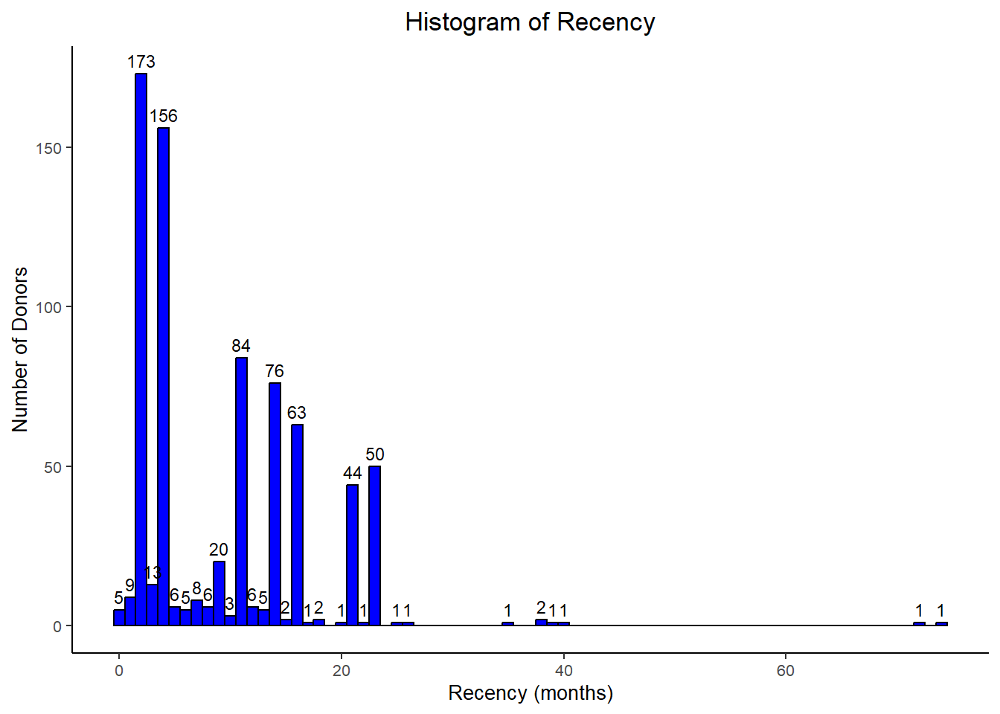
# Create a box plot for the Recency (months) variableggplot(BD, aes(x ="", y =`Recency (months)`)) +geom_boxplot(fill ="#00B945", color ="black") +labs(x ="", y ="Recency (months)", title ="Box Plot of Recency (months)") +theme_bw() +theme(axis.title =element_text(color ="black", size =10, face ="bold"), axis.text =element_text(color ="black", size =8), plot.title =element_text(color ="black", hjust =0.5),panel.border =element_rect(color ="black", fill =NA, size =1) ) +geom_text(aes(x =1.5, y =quantile(`Recency (months)`, 0.25), label =paste("Q1 = ", round(quantile(`Recency (months)`, 0.25), 2))),color ="black", size =3 ) +geom_text(aes(x =0.5, y =median(`Recency (months)`), label =paste("Median = ", round(median(`Recency (months)`), 2))),color ="black", size =3 ) +geom_text(aes(x =1.5, y =quantile(`Recency (months)`, 0.75), label =paste("Q3 = ", round(quantile(`Recency (months)`, 0.75), 2))),color ="black", size =3 ) +geom_text(aes(x =0.5, y =max(`Recency (months)`), label =paste("Max = ", round(max(`Recency (months)`), 0))),color ="black", size =3 ) +geom_text(aes(x =0.5, y =min(`Recency (months)`), label =paste("Min = ", round(min(`Recency (months)`), 0))),color ="black", size =3 )
Warning: The `size` argument of `element_rect()` is deprecated as of ggplot2 3.4.0.
ℹ Please use the `linewidth` argument instead.
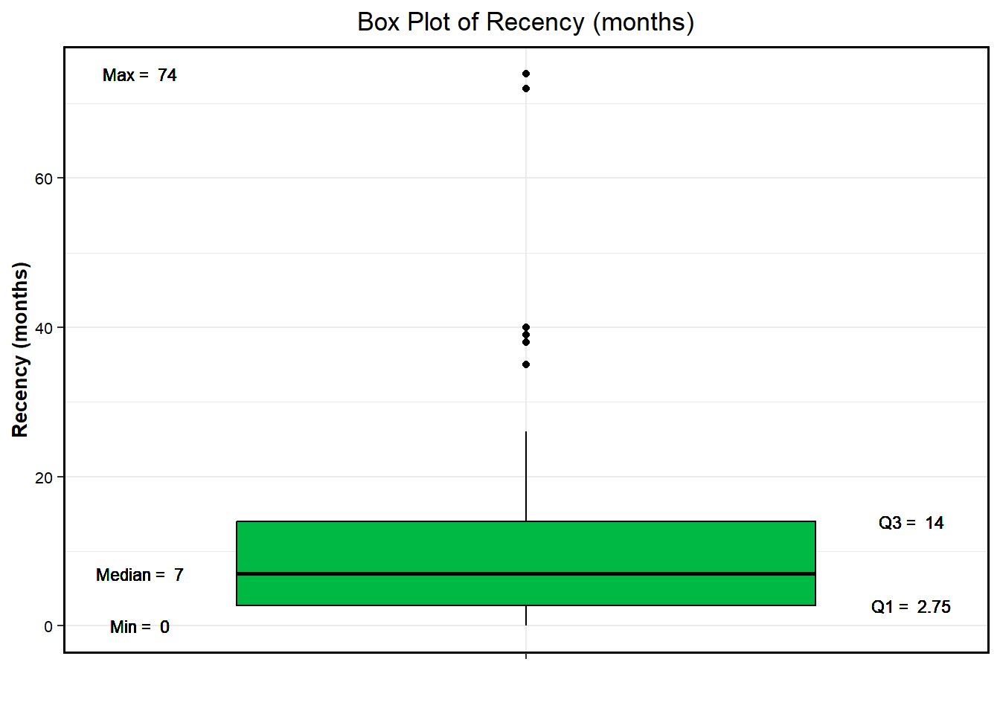
The Recency (months) histogram and box plot provide insights into the time elapsed since the last blood donation. The histogram indicates that the majority of donors have donated blood more recently, with 50% of donors having a recency of 7 months or less. The distribution is right-skewed, indicating that there are fewer donors with a longer recency period. The box plot shows that the median recency is 7 months, with 25% of donors having a recency of 2.75 months or less and 75% having a recency of 14 months or less.
The Recency (months) bar chart provides a visual representation of the number of donors who donated blood at different recency periods. The highest number of donors, 174, donated blood around the 2-month mark, and the number of donors gradually decreases with longer recency periods. However, there are some outliers in the data, with the maximum recency observed being 74 months.
# Histogram of Frequencyggplot(BD, aes(x =as.numeric(`Frequency (times)`))) +geom_histogram(binwidth =1, fill ="red", color ="black") +labs(title ="Histogram of Frequency", x ="Frequency (Times)", y ="Number of Donors") +theme(plot.title =element_text(hjust =0.5), panel.background =element_blank(), axis.line =element_line(colour ="black"), axis.title =element_text(size =10), axis.text =element_text(size =8))+geom_text(stat ="count", aes(label = ..count..), vjust =-0.5, size=3)
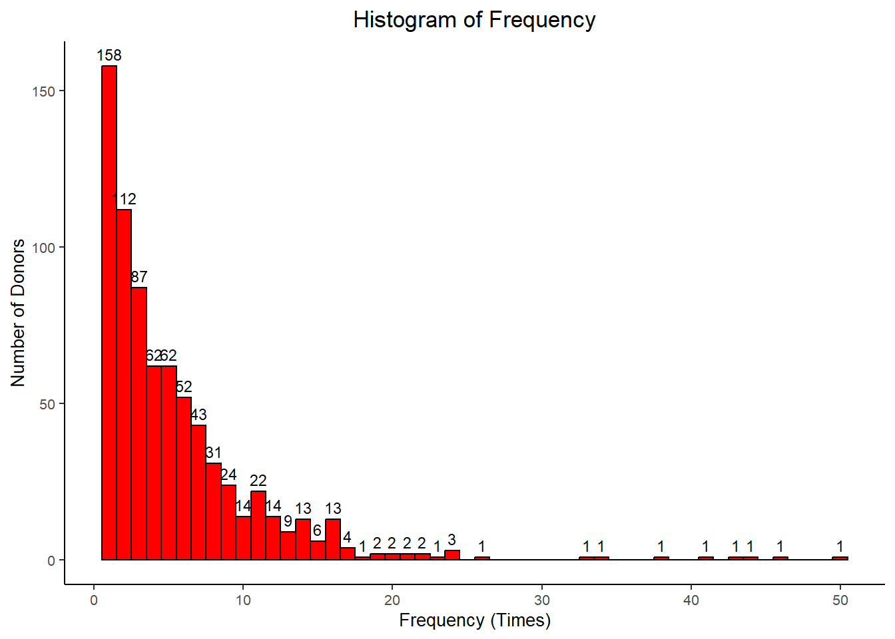
# Create a box plot for the Frequency (times) variableggplot(BD, aes(x ="", y =`Frequency (times)`)) +geom_boxplot(fill ="#00B945", color ="black") +labs(x ="", y ="Frequency (times)", title ="Box Plot of Frequency (times)") +theme_bw() +theme(axis.title =element_text(color ="black", size =10, face ="bold"), axis.text =element_text(color ="black", size =8), plot.title =element_text(color ="black", hjust =0.5),panel.border =element_rect(color ="black", fill =NA, size =1) ) +geom_text(aes(x =1.5, y =quantile(`Frequency (times)`, 0.25), label =paste("Q1 = ", round(quantile(`Frequency (times)`, 0.25), 2))),color ="black", size =3 ) +geom_text(aes(x =0.5, y =median(`Frequency (times)`), label =paste("Median = ", round(median(`Frequency (times)`), 2))),color ="black", size =3 ) +geom_text(aes(x =1.5, y =quantile(`Frequency (times)`, 0.75), label =paste("Q3 = ", round(quantile(`Frequency (times)`, 0.75), 2))),color ="black", size =3 ) +geom_text(aes(x =0.5, y =max(`Frequency (times)`), label =paste("Max = ", round(max(`Frequency (times)`), 0))),color ="black", size =3 ) +geom_text(aes(x =0.5, y =min(`Frequency (times)`), label =paste("Min = ", round(min(`Frequency (times)`), 0))),color ="black", size =3 )
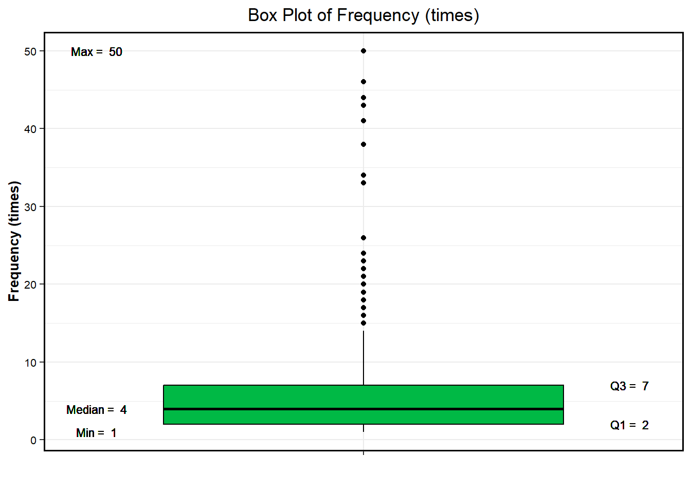
The histogram of Frequency (times) shows the distribution of the number of times each donor has donated blood. The x-axis represents the number of times donated, while the y-axis shows the number of donors falling within each bin. The plot indicates that the majority of donors have donated blood 1-2 times, with the number of donors decreasing as the number of donations increases. The distribution is highly right-skewed, indicating that there are fewer donors who have donated blood many times.
The box plot of Frequency (times) shows that the median number of donations made by each donor is 4, with 25% of donors having made 2 or fewer donations and 75% having made 7 or fewer donations. This indicates that the majority of donors have made a relatively small number of donations. The maximum number of donations observed in the data is 50, while the minimum number of donations is 1.
# Histogram of Monetary (Total Blood Donated in c.c.)ggplot(BD, aes(x =`Monetary (c.c. blood)`)) +geom_histogram(binwidth =250, fill ="green", color ="black") +labs(title ="Histogram of Monetary (Total Blood Donated in c.c.)", x ="Total Blood Donated in (c.c.)", y ="Number of Donors") +theme(plot.title =element_text(hjust =0.5), panel.background =element_blank(), axis.line =element_line(colour ="black"), axis.title =element_text(size =10), axis.text =element_text(size =8)) +geom_text(stat ="count", aes(label = ..count..), vjust =-0.5, size =3)
The box plot for Monetary (c.c. blood) indicates that the median donation amount is 1000 cubic centimeters, with 25% of donors having donated 500 cubic centimeters or less and 75% having donated 1750 cubic centimeters or less. The data also contains several outliers, with the maximum donation amount being 12,500 cubic centimeters. This suggests that while most donors donate smaller amounts, there are some donors who donate significantly larger amounts.
Similarly, the histogram for Monetary (c.c. blood) reveals a right-skewed distribution, with the majority of donors donating smaller amounts and fewer donors donating larger amounts. The peak of the distribution is observed at the bin corresponding to 500 cubic centimeters, with the number of donors decreasing as the donation amount increases. The presence of outliers in the box plot indicates that there are some donors who have donated very large amounts of blood.
It’s worth noting that there is a correlation between the Monetary (c.c. blood) variable and the Frequency (times) variable. Since each donation corresponds to 250 cc, a frequency of 1 corresponds to 250 cc, a frequency of 2 corresponds to 500 cc, and so on. This implies that donors who donate more frequently are also likely to donate larger amounts of blood overall.
# Histogram of Time (months)ggplot(BD, aes(x =`Time (months)`)) +geom_histogram(binwidth =1, fill ="green", color ="black") +labs(title ="Histogram of Time (months)", x ="Time (Months)", y ="Number of Donors") +theme(plot.title =element_text(hjust =0.5), panel.background =element_blank(), axis.line =element_line(colour ="black"), axis.title =element_text(size =10), axis.text =element_text(size =8))
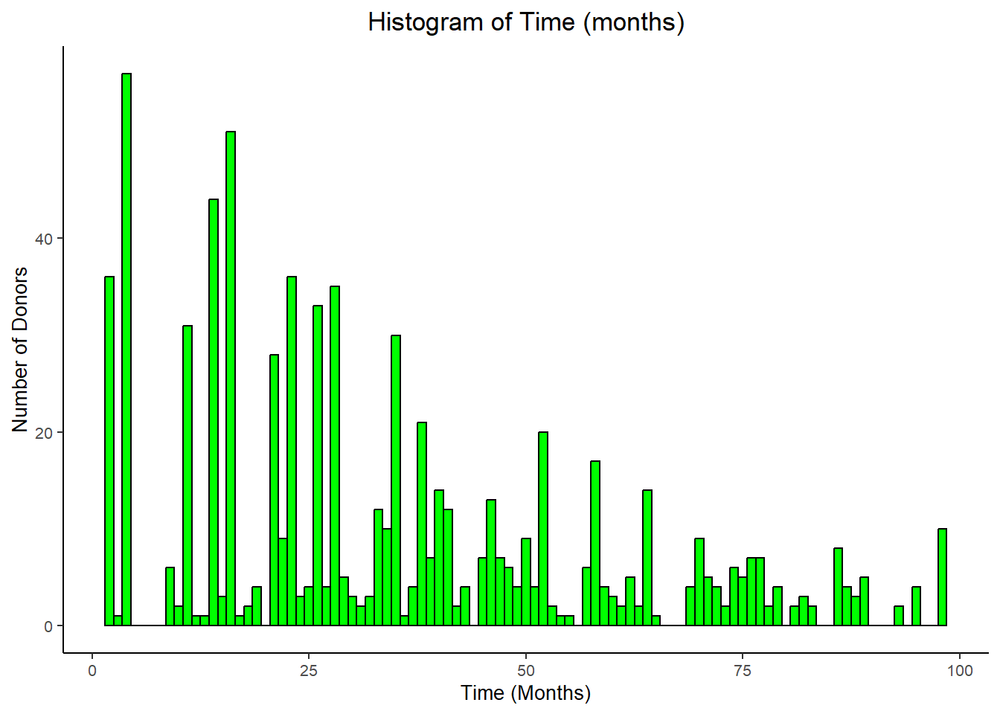
# Create a box plot for the Monetary (c.c. blood) variableggplot(BD, aes(x ="", y =`Time (months)`)) +geom_boxplot(fill ="#00B945", color ="black") +labs(x ="", y ="Time (months)", title ="Box Plot of Time (months)") +theme_bw() +theme(axis.title =element_text(color ="black", size =10, face ="bold"), axis.text =element_text(color ="black", size =8), plot.title =element_text(color ="black", hjust =0.5),panel.border =element_rect(color ="black", fill =NA, size =1) ) +geom_text(aes(x =1.5, y =quantile(`Time (months)`, 0.25), label =paste("Q1 = ", round(quantile(`Time (months)`, 0.25), 2))),color ="black", size =3 ) +geom_text(aes(x =0.5, y =median(`Time (months)`), label =paste("Median = ", round(median(`Time (months)`), 2))),color ="black", size =3 ) +geom_text(aes(x =1.5, y =quantile(`Time (months)`, 0.75), label =paste("Q3 = ", round(quantile(`Time (months)`, 0.75), 2))),color ="black", size =3 ) +geom_text(aes(x =0.5, y =max(`Time (months)`), label =paste("Max = ", round(max(`Time (months)`), 0))),color ="black", size =3 ) +geom_text(aes(x =0.5, y =min(`Time (months)`), label =paste("Min = ", round(min(`Time (months)`), 0))),color ="black", size =3 )
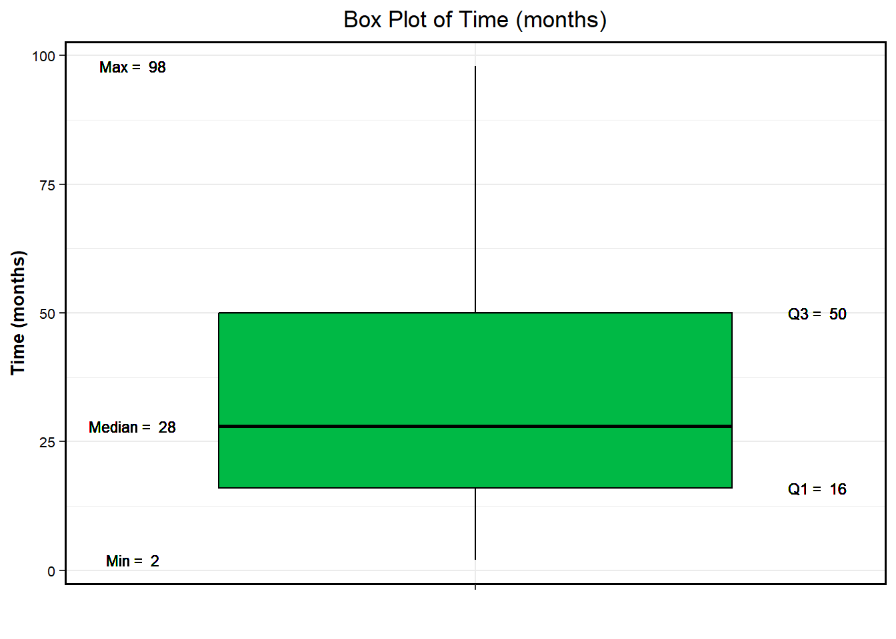
The histogram plot of Time (months) also shows that the distribution is right-skewed, with a peak at around 2-4 months, indicating that many donors donate again within a few months of their previous donation. As the time since the last donation increases, the number of donors decreases, with a small peak observed around 20-25 months. There are also a few donors who have a very long time since their last donation, as indicated by the outliers in the box plot.
The box plot of Time (months) shows that the median time between a donor’s first donation and their most recent donation is around 28 months, with 25% of donors having a time period of 16 months or less and 75% having a time period of 50 months or less. There are several outliers in the data, with the maximum time period being 98 months. This indicates that while the majority of donors have donated more recently, there are a few donors who donated a long time ago but still continued to donate blood.
# Bar chart of Whether he/she donated blood in March 2007ggplot(data = BD, aes(x =factor(`whether he/she donated blood in March 2007`))) +geom_bar(fill =c("red", "green"), color ="black") +labs(title ="Blood Donation in March 2007", x ="Blood Donation in March 2007 ", y ="Number of Donors", title.position ="plot") +scale_x_discrete(labels =c("No", "Yes")) +theme(plot.title =element_text(hjust =0.5),panel.background =element_blank(),panel.grid.major =element_blank(),panel.grid.minor =element_blank(),axis.line =element_line(colour ="black"),axis.text =element_text(colour ="black"),axis.title =element_text(colour ="black"))
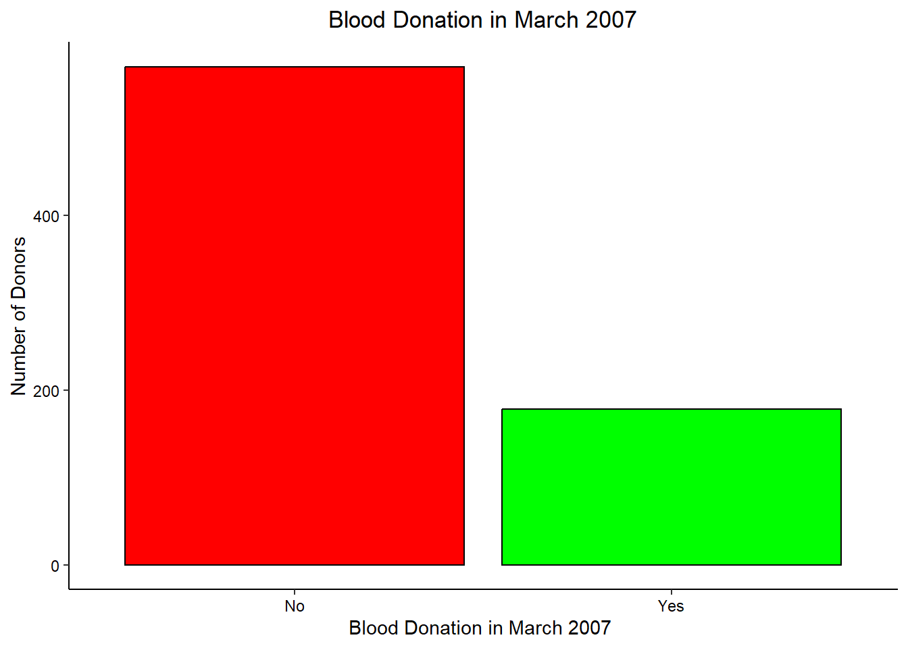
# Create a pie chartggplot(data = BD, aes(x ="", fill =`whether he/she donated blood in March 2007`, group =`whether he/she donated blood in March 2007`)) +geom_bar(width =1, color ="black") +coord_polar(theta ="y") +labs(title ="Blood Donation in March 2007",fill ="Blood Donation in March 2007",x ="", y ="") +scale_fill_manual(values =c("#FF8C00", "#1F3552")) +# navy blue and dark orange color schemetheme_void() +theme(plot.title =element_text(hjust =0.5, color ="#FF8C00", size =18)) +# center title and change color to dark orangegeom_text(aes(label = scales::percent(..count../sum(..count..)), y = ..count..), stat ="count", position =position_stack(vjust =0.5), size =5) +labs(caption ="Source: Blood Transfusion Service Center Data Set")
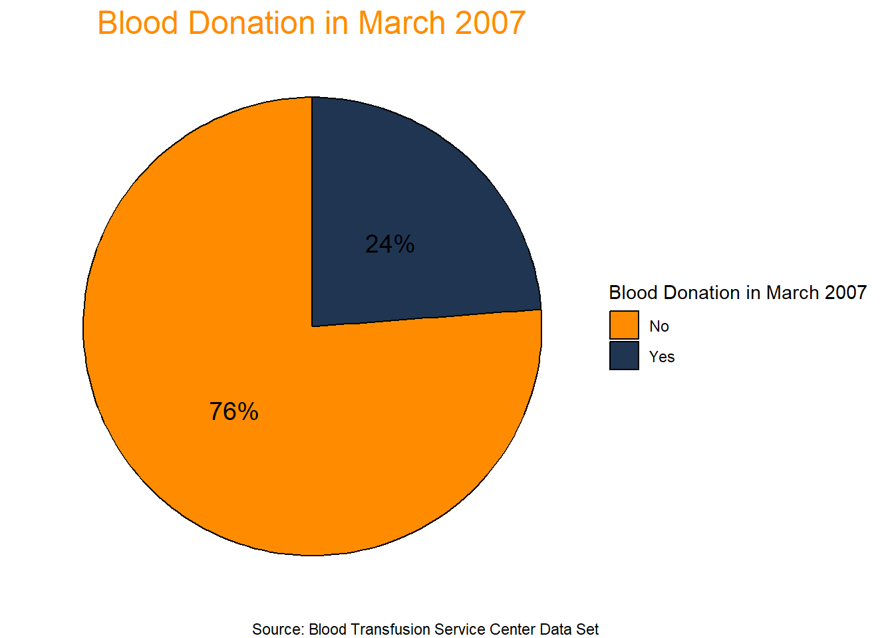
The bar chart displays the number of donors who donated blood in March 2007 and those who did not. Majority of donors did not donate blood in March 2007, with 570 donors falling into this category, while 178 donors did donate blood in March 2007. The pie chart shows that only about 23.8% of donors donated blood in March 2007, while the remaining 76.2% did not.
Overall, both charts indicate that a relatively small proportion of donors donated blood in March 2007, which may be important to consider when analyzing the other variables in the dataset.
Recency (months) Frequency (times) Monetary (c.c. blood)
Recency (months) 1.0000000 -0.1827455 -0.1827455
Frequency (times) -0.1827455 1.0000000 1.0000000
Monetary (c.c. blood) -0.1827455 1.0000000 1.0000000
Time (months) 0.1606181 0.6349403 0.6349403
Time (months)
Recency (months) 0.1606181
Frequency (times) 0.6349403
Monetary (c.c. blood) 0.6349403
Time (months) 1.0000000
# Compute the correlation matrixcorr_matrix <-cor(BD[, c("Recency (months)", "Frequency (times)", "Monetary (c.c. blood)", "Time (months)")])# Create the correlation plotcorrplot(corr_matrix, method ="circle", type ="upper", tl.col ="black", tl.srt =45)
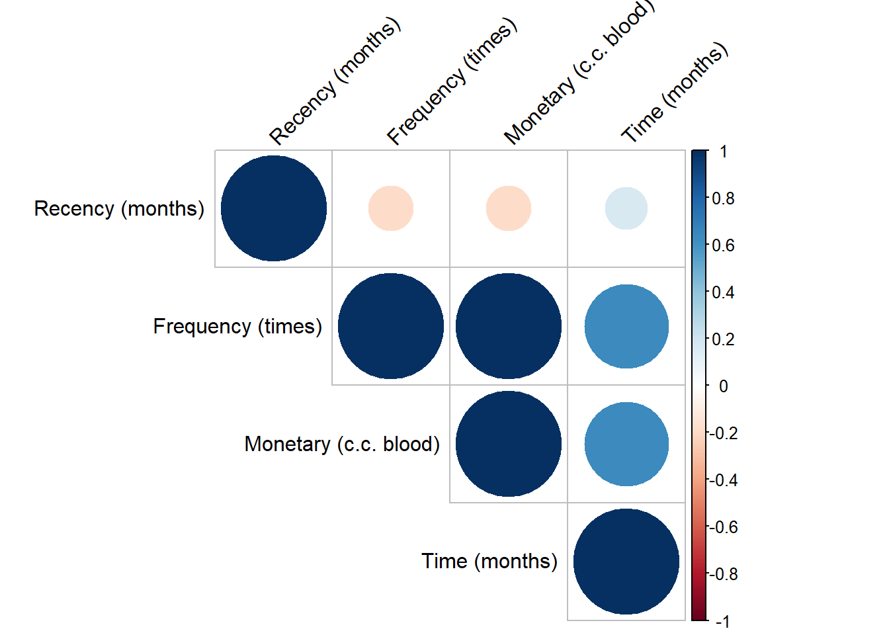
Based on the correlation table, there is a weak negative correlation between Recency (months) and Frequency (times) with a correlation coefficient of -0.18. This means that as the number of months since the last donation increases, the frequency of blood donations decreases slightly.
There is also a strong positive correlation between Frequency (times) and Monetary (c.c. blood) with a correlation coefficient of 1.0. This means that as the frequency of blood donations increases, the amount of blood donated also tends to increase.
Moreover, there is a moderate positive correlation between Time (months) and Frequency (times) as well as Monetary (c.c. blood) with correlation coefficients of 0.63 and 0.63 respectively. This means that donors who donate more frequently tend to do so over a longer period of time, and they also tend to donate more blood overall.
ggplot(data = BD, aes(x =`Recency (months)`, y =`whether he/she donated blood in March 2007`, color =`whether he/she donated blood in March 2007`)) +geom_point() +labs(title ="Donation vs Recency", x ="Recency (months)", y ="Donation", color ="Donated") +theme(plot.title =element_text(hjust =0.5), panel.grid.major =element_blank(), panel.grid.minor =element_blank(), panel.background =element_blank(), axis.line =element_line(size=1, color="black")) +geom_smooth(method ="lm")
`geom_smooth()` using formula = 'y ~ x'
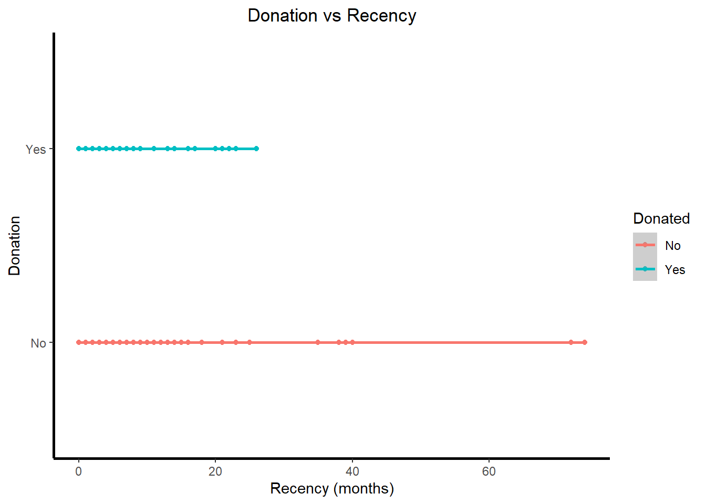
ggplot(data = BD, aes(x =`Frequency (times)`, y =`whether he/she donated blood in March 2007`, color =`whether he/she donated blood in March 2007`)) +geom_point() +labs(title ="Donation vs Frequency", x ="Frequency (times)", y ="Donation", color ="Donated") +theme(plot.title =element_text(hjust =0.5), panel.grid.major =element_blank(), panel.grid.minor =element_blank(), panel.background =element_blank(), axis.line =element_line(size=1, color="black")) +geom_smooth(method ="lm")
`geom_smooth()` using formula = 'y ~ x'
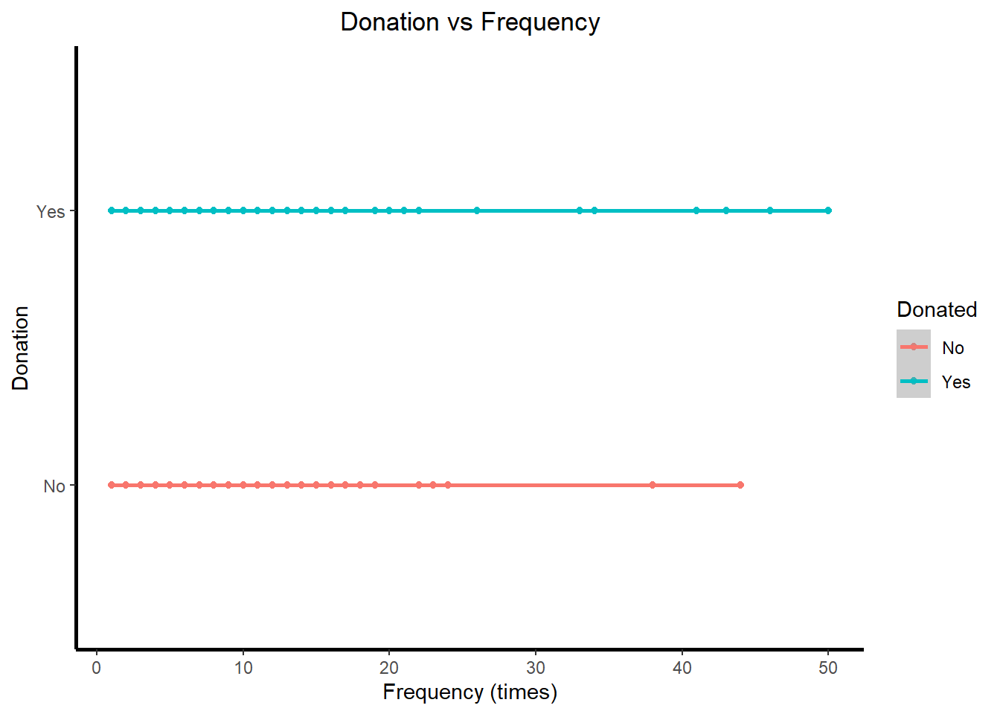
ggplot(data = BD, aes(x =`Monetary (c.c. blood)`, y =`whether he/she donated blood in March 2007`, color =`whether he/she donated blood in March 2007`)) +geom_point() +labs(title ="Donation vs Monetary", x ="Monetary (c.c. blood)", y ="Donation", color ="Donated") +theme(plot.title =element_text(hjust =0.5), panel.grid.major =element_blank(), panel.grid.minor =element_blank(), panel.background =element_blank(), axis.line =element_line(size=1, color="black")) +geom_smooth(method ="lm")
`geom_smooth()` using formula = 'y ~ x'
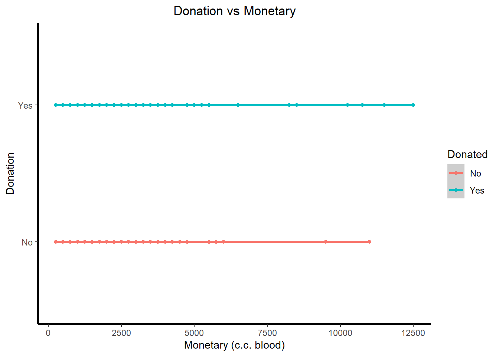
ggplot(data = BD, aes(x =`Time (months)`, y =`whether he/she donated blood in March 2007`, color =`whether he/she donated blood in March 2007`)) +geom_point() +labs(title ="Donation vs Time", x ="Time (months)", y ="Donation", color ="Donated") +theme(plot.title =element_text(hjust =0.5), panel.grid.major =element_blank(), panel.grid.minor =element_blank(), panel.background =element_blank(), axis.line =element_line(size=1, color="black")) +geom_smooth(method ="lm")
`geom_smooth()` using formula = 'y ~ x'
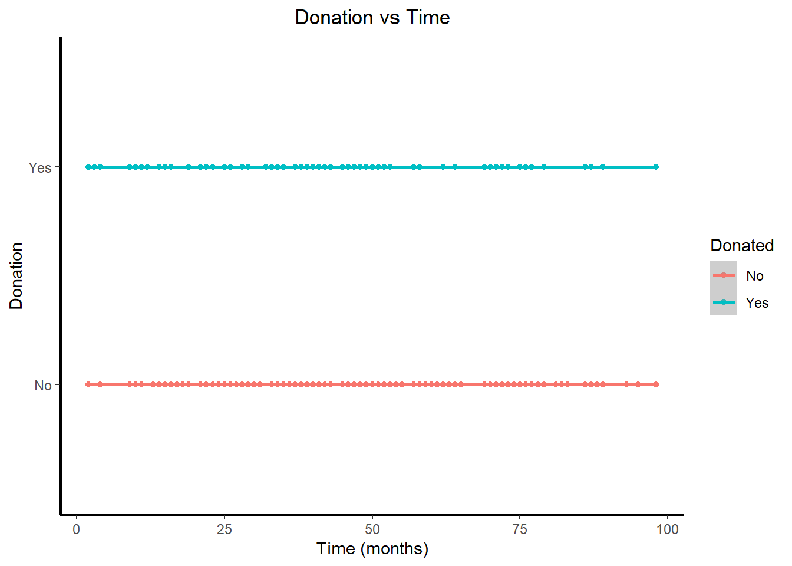
The first scatterplot shows the relationship between recency of donation and the likelihood of donating blood in March 2007. The second scatterplot shows the relationship between frequency of donation and the likelihood of donating blood in March 2007. The third scatterplot shows the relationship between the amount of blood donated (measured in cubic centimeters) and the likelihood of donating blood in March 2007. Finally, the fourth scatterplot shows the relationship between the length of time since the donor’s first donation and the likelihood of donating blood in March 2007.
In general, it appears that more frequent, recent, and higher volume donations are associated with a higher likelihood of donating blood in March 2007. The fourth scatterplot shows a slightly different trend, with a higher likelihood of donation at around the 30-month mark since the first donation. However, none of scatterplots show a strong relationship between the predictor variable and the likelihood of donating blood in March 2007, as indicated by the relatively flat regression lines.
Hypothesis
Hypothesis 1: There is a significant difference in the past frequency of blood donations between donors who have donated in March 2007 and those who have not.
Confounding variables recency of blood donations, Monetary Value of blood donations, Time (months) of blood donations
Hypothesis 2: There is a significant difference in the Recency of blood donations between donors who have donated in March 2007 and those who have not.
Confounding variables: Past frequency of blood donations, Monetary Value of blood donations, Time (months) of blood donations
Hypothesis 3: There is a significant difference in the Monetary Value of blood donations between donors who have donated in March 2007 and those who have not.
Confounding variables: Past frequency of blood donations, Recency of blood donations, Time (months) of blood donations
Hypothesis 4: There is a significant difference in the Time (months) of blood donations between donors who have donated in March 2007 and those who have not.
Confounding variables: Past frequency of blood donations, Recency of blood donations, Monetary Value of blood donations
Hypothesis 5: Donors who have donated blood more frequently in the past (i.e. a higher average number of donations per month) are more likely to donate again in March 2007.
Hypothesis 6: Donors who have donated higher average Monetary (c.c. blood) (per month) are more likely to donate again in March 2007.
Hypothesis 7: Donors who have donated blood more recently (Recency (months)) and with higher frequency (Frequency (times)) are more likely to donate again in March 2007.
Hypothesis 8: Donors who have donated blood more recently (Recency (months)) and with higher blood donation in past (Monetary (c.c. blood)) are more likely to donate again in March 2007.
Logistic regression Analysis:
Hypothesis 1:
# Model 11model11 <-glm(`whether he/she donated blood in March 2007`~`Frequency (times)`* (`Recency (months)`+`Monetary (c.c. blood)`+`Time (months)`), data = BD, family =binomial(link ="logit"))summary(model11)
Call:
glm(formula = `whether he/she donated blood in March 2007` ~
`Frequency (times)` * (`Recency (months)` + `Monetary (c.c. blood)` +
`Time (months)`), family = binomial(link = "logit"),
data = BD)
Deviance Residuals:
Min 1Q Median 3Q Max
-1.8337 -0.7340 -0.4852 -0.1756 2.5925
Coefficients: (1 not defined because of singularities)
Estimate Std. Error z value
(Intercept) -1.122e+00 2.671e-01 -4.199
`Frequency (times)` 3.104e-01 5.713e-02 5.433
`Recency (months)` -6.617e-02 2.607e-02 -2.538
`Monetary (c.c. blood)` NA NA NA
`Time (months)` -1.702e-02 1.031e-02 -1.651
`Frequency (times)`:`Recency (months)` -5.439e-03 3.919e-03 -1.388
`Frequency (times)`:`Monetary (c.c. blood)` -1.016e-06 9.250e-06 -0.110
`Frequency (times)`:`Time (months)` -1.990e-03 1.163e-03 -1.712
Pr(>|z|)
(Intercept) 2.68e-05 ***
`Frequency (times)` 5.54e-08 ***
`Recency (months)` 0.0111 *
`Monetary (c.c. blood)` NA
`Time (months)` 0.0987 .
`Frequency (times)`:`Recency (months)` 0.1652
`Frequency (times)`:`Monetary (c.c. blood)` 0.9125
`Frequency (times)`:`Time (months)` 0.0869 .
---
Signif. codes: 0 '***' 0.001 '**' 0.01 '*' 0.05 '.' 0.1 ' ' 1
(Dispersion parameter for binomial family taken to be 1)
Null deviance: 820.89 on 747 degrees of freedom
Residual deviance: 692.89 on 741 degrees of freedom
AIC: 706.89
Number of Fisher Scoring iterations: 5
BIC(model11)
[1] 739.2094
AIC(model11)
[1] 706.8876
# Model 111model111 <-glm(`whether he/she donated blood in March 2007`~`Frequency (times)`* (`Recency (months)`+`Time (months)`), data = BD, family =binomial(link ="logit"))summary(model111)
Call:
glm(formula = `whether he/she donated blood in March 2007` ~
`Frequency (times)` * (`Recency (months)` + `Time (months)`),
family = binomial(link = "logit"), data = BD)
Deviance Residuals:
Min 1Q Median 3Q Max
-1.8359 -0.7328 -0.4841 -0.1775 2.5913
Coefficients:
Estimate Std. Error z value Pr(>|z|)
(Intercept) -1.1235111 0.2667332 -4.212 2.53e-05
`Frequency (times)` 0.3086468 0.0549479 5.617 1.94e-08
`Recency (months)` -0.0671781 0.0244043 -2.753 0.00591
`Time (months)` -0.0161226 0.0062869 -2.564 0.01033
`Frequency (times)`:`Recency (months)` -0.0053101 0.0037377 -1.421 0.15540
`Frequency (times)`:`Time (months)` -0.0021010 0.0005798 -3.624 0.00029
(Intercept) ***
`Frequency (times)` ***
`Recency (months)` **
`Time (months)` *
`Frequency (times)`:`Recency (months)`
`Frequency (times)`:`Time (months)` ***
---
Signif. codes: 0 '***' 0.001 '**' 0.01 '*' 0.05 '.' 0.1 ' ' 1
(Dispersion parameter for binomial family taken to be 1)
Null deviance: 820.89 on 747 degrees of freedom
Residual deviance: 692.90 on 742 degrees of freedom
AIC: 704.9
Number of Fisher Scoring iterations: 5
BIC(model111)
[1] 732.604
AIC(model111)
[1] 704.8996
# Model 112model112 <-glm(`whether he/she donated blood in March 2007`~`Frequency (times)`* (`Time (months)`), data = BD, family =binomial(link ="logit"))summary(model112)
Call:
glm(formula = `whether he/she donated blood in March 2007` ~
`Frequency (times)` * (`Time (months)`), family = binomial(link = "logit"),
data = BD)
Deviance Residuals:
Min 1Q Median 3Q Max
-1.8658 -0.6898 -0.5688 -0.2717 2.5392
Coefficients:
Estimate Std. Error z value Pr(>|z|)
(Intercept) -1.5986493 0.2069198 -7.726 1.11e-14 ***
`Frequency (times)` 0.3413174 0.0466596 7.315 2.57e-13 ***
`Time (months)` -0.0278320 0.0062804 -4.432 9.36e-06 ***
`Frequency (times)`:`Time (months)` -0.0023162 0.0005376 -4.308 1.64e-05 ***
---
Signif. codes: 0 '***' 0.001 '**' 0.01 '*' 0.05 '.' 0.1 ' ' 1
(Dispersion parameter for binomial family taken to be 1)
Null deviance: 820.89 on 747 degrees of freedom
Residual deviance: 728.64 on 744 degrees of freedom
AIC: 736.64
Number of Fisher Scoring iterations: 4
BIC(model112)
[1] 755.1073
AIC(model112)
[1] 736.6377
# Model 113model113 <-glm(`whether he/she donated blood in March 2007`~`Frequency (times)`* (`Recency (months)`), data = BD, family =binomial(link ="logit"))summary(model113)
Call:
glm(formula = `whether he/she donated blood in March 2007` ~
`Frequency (times)` * (`Recency (months)`), family = binomial(link = "logit"),
data = BD)
Deviance Residuals:
Min 1Q Median 3Q Max
-2.3019 -0.8079 -0.4994 -0.2725 2.6070
Coefficients:
Estimate Std. Error z value Pr(>|z|)
(Intercept) -0.796449 0.204599 -3.893 9.91e-05
`Frequency (times)` 0.090311 0.025025 3.609 0.000307
`Recency (months)` -0.092477 0.023485 -3.938 8.23e-05
`Frequency (times)`:`Recency (months)` -0.004730 0.003521 -1.343 0.179151
(Intercept) ***
`Frequency (times)` ***
`Recency (months)` ***
`Frequency (times)`:`Recency (months)`
---
Signif. codes: 0 '***' 0.001 '**' 0.01 '*' 0.05 '.' 0.1 ' ' 1
(Dispersion parameter for binomial family taken to be 1)
Null deviance: 820.89 on 747 degrees of freedom
Residual deviance: 722.55 on 744 degrees of freedom
AIC: 730.55
Number of Fisher Scoring iterations: 5
BIC(model113)
[1] 749.0217
AIC(model113)
[1] 730.552
# Model 12model12 <-glm(`whether he/she donated blood in March 2007`~`Frequency (times)`+ (`Recency (months)`+`Monetary (c.c. blood)`+`Time (months)`), data = BD, family =binomial(link ="logit"))summary(model12)
Call:
glm(formula = `whether he/she donated blood in March 2007` ~
`Frequency (times)` + (`Recency (months)` + `Monetary (c.c. blood)` +
`Time (months)`), family = binomial(link = "logit"),
data = BD)
Deviance Residuals:
Min 1Q Median 3Q Max
-2.4875 -0.7933 -0.4997 -0.1701 2.6450
Coefficients: (1 not defined because of singularities)
Estimate Std. Error z value Pr(>|z|)
(Intercept) -0.449540 0.180349 -2.493 0.012681 *
`Frequency (times)` 0.135390 0.025672 5.274 1.34e-07 ***
`Recency (months)` -0.098584 0.017317 -5.693 1.25e-08 ***
`Monetary (c.c. blood)` NA NA NA NA
`Time (months)` -0.023092 0.005964 -3.872 0.000108 ***
---
Signif. codes: 0 '***' 0.001 '**' 0.01 '*' 0.05 '.' 0.1 ' ' 1
(Dispersion parameter for binomial family taken to be 1)
Null deviance: 820.89 on 747 degrees of freedom
Residual deviance: 707.87 on 744 degrees of freedom
AIC: 715.87
Number of Fisher Scoring iterations: 5
BIC(model12)
[1] 734.3364
AIC(model12)
[1] 715.8668
# Model 121model121 <-glm(`whether he/she donated blood in March 2007`~`Frequency (times)`+ (`Recency (months)`+`Time (months)`), data = BD, family =binomial(link ="logit"))summary(model121)
Call:
glm(formula = `whether he/she donated blood in March 2007` ~
`Frequency (times)` + (`Recency (months)` + `Time (months)`),
family = binomial(link = "logit"), data = BD)
Deviance Residuals:
Min 1Q Median 3Q Max
-2.4875 -0.7933 -0.4997 -0.1701 2.6450
Coefficients:
Estimate Std. Error z value Pr(>|z|)
(Intercept) -0.449540 0.180349 -2.493 0.012681 *
`Frequency (times)` 0.135390 0.025672 5.274 1.34e-07 ***
`Recency (months)` -0.098584 0.017317 -5.693 1.25e-08 ***
`Time (months)` -0.023092 0.005964 -3.872 0.000108 ***
---
Signif. codes: 0 '***' 0.001 '**' 0.01 '*' 0.05 '.' 0.1 ' ' 1
(Dispersion parameter for binomial family taken to be 1)
Null deviance: 820.89 on 747 degrees of freedom
Residual deviance: 707.87 on 744 degrees of freedom
AIC: 715.87
Number of Fisher Scoring iterations: 5
BIC(model121)
[1] 734.3364
AIC(model121)
[1] 715.8668
anova(model111,model112,model113, model121)
Analysis of Deviance Table
Model 1: `whether he/she donated blood in March 2007` ~ `Frequency (times)` *
(`Recency (months)` + `Time (months)`)
Model 2: `whether he/she donated blood in March 2007` ~ `Frequency (times)` *
(`Time (months)`)
Model 3: `whether he/she donated blood in March 2007` ~ `Frequency (times)` *
(`Recency (months)`)
Model 4: `whether he/she donated blood in March 2007` ~ `Frequency (times)` +
(`Recency (months)` + `Time (months)`)
Resid. Df Resid. Dev Df Deviance
1 742 692.90
2 744 728.64 -2 -35.738
3 744 722.55 0 6.086
4 744 707.87 0 14.685
lrtest(model111, model112,model113,model121)
Likelihood ratio test
Model 1: `whether he/she donated blood in March 2007` ~ `Frequency (times)` *
(`Recency (months)` + `Time (months)`)
Model 2: `whether he/she donated blood in March 2007` ~ `Frequency (times)` *
(`Time (months)`)
Model 3: `whether he/she donated blood in March 2007` ~ `Frequency (times)` *
(`Recency (months)`)
Model 4: `whether he/she donated blood in March 2007` ~ `Frequency (times)` +
(`Recency (months)` + `Time (months)`)
#Df LogLik Df Chisq Pr(>Chisq)
1 6 -346.45
2 4 -364.32 -2 35.7380 1.736e-08 ***
3 4 -361.28 0 6.0856 < 2.2e-16 ***
4 4 -353.93 0 14.6852 < 2.2e-16 ***
---
Signif. codes: 0 '***' 0.001 '**' 0.01 '*' 0.05 '.' 0.1 ' ' 1
The intercept coefficient is estimated to be -1.122, indicating the log-odds of donating blood in March 2007 when all predictor variables are zero. The intercept is statistically significant (p < 0.001), suggesting that the probability of donating blood in March 2007 is significantly different from zero even without any predictor variables.
The coefficient for Frequency (times) is estimated to be 0.3104, indicating that for each unit increase in the frequency of blood donation, the log-odds of donating blood in March 2007 increase by 0.3104. This coefficient is statistically significant (p < 0.001), suggesting that higher frequencies of blood donation are associated with a higher likelihood of donating blood in March 2007.
The coefficient for Recency (months) is estimated to be -0.0662, indicating that for each unit increase in the number of months since the last donation, the log-odds of donating blood in March 2007 decrease by 0.0662. This coefficient is statistically significant (p = 0.0111), suggesting that a longer time since the last donation is associated with a lower likelihood of donating blood in March 2007.
The coefficient for Time (months) is estimated to be -0.0170, indicating that for each unit increase in the number of months since the first donation, the log-odds of donating blood in March 2007 decrease by 0.0170. However, this coefficient is not statistically significant at conventional levels (p = 0.0987), suggesting that the relationship between the overall duration of blood donation experience and the likelihood of donation in March 2007 may not be significant.
The coefficient for the interaction term Frequency (times):Recency (months) is estimated to be -0.0054. However, this coefficient is not statistically significant (p = 0.1652), indicating that the interaction between frequency and recency does not have a significant effect on the log-odds of donating blood in March 2007.
interaction terms:
The coefficient for the interaction term Frequency (times):Monetary (c.c. blood) has an NA value, indicating that it could not be estimated due to collinearity or singularity issues caused by the high correlation between Frequency (times) and Monetary (c.c. blood).
The coefficient for the interaction term Frequency (times):Time (months) is estimated to be -0.00199. Although marginally significant (p = 0.0869), this suggests that the interaction between frequency and the duration of blood donation experience may be associated with a decrease in the log-odds of donating blood in March 2007.
The model’s deviance statistics show a residual deviance of 692.89 on 741 degrees of freedom, indicating a reasonably good fit of the model to the data.
The AIC value of 706.89 and the BIC value of 739.2094 indicate the relative quality of the model fit, with lower values suggesting better fit while considering the model’s complexity.
In summary, considering the NA value for the Monetary (c.c. blood) coefficient, the logistic regression model suggests that the frequency of blood donation, the recency of the last donation, and the overall duration of blood donation experience are important factors in predicting the likelihood of donating blood in March 2007. The interaction between frequency and recency, as well as frequency and time, does not appear to have significant effects on the likelihood of donation. The model’s deviance statistics and model selection criteria support the adequacy of the model fit.
Model111:
The intercept coefficient is estimated to be -1.1235, indicating the log-odds of donating blood in March 2007 when all predictor variables are zero. The intercept is statistically significant (p < 0.001), suggesting that the probability of donating blood in March 2007 is significantly different from zero even without any predictor variables.
The coefficient for Frequency (times) is estimated to be 0.3086, indicating that for each unit increase in the frequency of blood donation, the log-odds of donating blood in March 2007 increase by 0.3086. This coefficient is statistically significant (p < 0.001), suggesting that higher frequencies of blood donation are associated with a higher likelihood of donating blood in March 2007.
The coefficient for Recency (months) is estimated to be -0.0672, indicating that for each unit increase in the number of months since the last donation, the log-odds of donating blood in March 2007 decrease by 0.0672. This coefficient is statistically significant (p = 0.00591), suggesting that a longer time since the last donation is associated with a lower likelihood of donating blood in March 2007.
The coefficient for Time (months) is estimated to be -0.0161, indicating that for each unit increase in the number of months since the first donation, the log-odds of donating blood in March 2007 decrease by 0.0161. This coefficient is statistically significant (p = 0.01033), suggesting that a longer duration of blood donation experience is associated with a lower likelihood of donating blood in March 2007.
interaction terms:
The coefficient for the interaction term Frequency (times):Recency (months) is estimated to be -0.0053. However, this coefficient is not statistically significant (p = 0.15540), indicating that the interaction between frequency and recency does not have a significant effect on the log-odds of donating blood in March 2007.
The coefficient for the interaction term Frequency (times):Time (months) is estimated to be -0.0021, indicating that the interaction between frequency and the duration of blood donation experience is associated with a decrease in the log-odds of donating blood in March 2007. This coefficient is statistically significant (p = 0.00029), suggesting that the interaction has a significant effect.
The model’s deviance statistics show a residual deviance of 692.90 on 742 degrees of freedom, indicating a reasonably good fit of the model to the data.
The AIC value of 704.9 and the BIC value of 732.604 indicate the relative quality of the model fit, with lower values suggesting better fit while considering the model’s complexity.
In summary, the logistic regression model (Model 111) suggests that the frequency of blood donation, recency of the last donation, and the overall duration of blood donation experience are important factors in predicting the likelihood of donating blood in March 2007. The interaction between frequency and time has a significant effect on the likelihood of donation, while the interaction between frequency and recency does not.
Model 112
In Model 112, we examine the relationship between the likelihood of donating blood in March 2007 and the predictors Frequency (times) and Time (months). The model also includes an interaction term between these two predictors.
The model’s summary output reveals the following:
The intercept coefficient is -1.5986, indicating the log-odds of donating blood in March 2007 when both Frequency (times) and Time (months) are zero.
The coefficient for Frequency (times) is 0.3413, suggesting that for each unit increase in Frequency (times), the log-odds of donating blood in March 2007 increase by 0.3413. Individuals who donate blood more frequently have higher odds of donating blood in March 2007 compared to those who donate less frequently.
The coefficient for Time (months) is -0.0278, indicating that for each unit increase in Time (months), the log-odds of donating blood in March 2007 decrease by 0.0278. Individuals with a longer overall duration of blood donation experience are less likely to donate blood in March 2007.
The coefficient for the interaction term between Frequency (times) and Time (months) is -0.0023, suggesting that the relationship between Frequency (times) and the log-odds of donating blood in March 2007 depends on the value of Time (months).
The model’s deviance statistics indicate a residual deviance of 728.64 on 744 degrees of freedom, suggesting that the model provides a reasonable fit to the data.
Considering the model selection criteria, the AIC value of 736.64 and BIC value of 755.11 suggest that Model 112 provides a relatively good fit to the data while considering the model’s complexity. Lower AIC and BIC values indicate better trade-offs between model fit and complexity.
Overall, Model 112 suggests that both Frequency (times) and Time (months) are significant predictors of the likelihood of donating blood in March 2007. Furthermore, there is evidence of an interaction effect between these two predictors, indicating that the relationship between frequency and the likelihood of donation depends on the duration of blood donation experience.
Model 113
In Model 113, we examine the relationship between the likelihood of donating blood in March 2007 and the predictors Frequency (times) and Recency (months). The model also includes an interaction term between these two predictors.
The model’s summary output reveals the following:
The intercept coefficient is -0.7964, indicating the log-odds of donating blood in March 2007 when both Frequency (times) and Recency (months) are zero.
The coefficient for Frequency (times) is 0.0903, suggesting that for each unit increase in Frequency (times), the log-odds of donating blood in March 2007 increase by 0.0903. Individuals who donate blood more frequently have higher odds of donating blood in March 2007 compared to those who donate less frequently.
The coefficient for Recency (months) is -0.0925, indicating that for each unit increase in Recency (months), the log-odds of donating blood in March 2007 decrease by 0.0925. Individuals with a longer time interval since their last donation are less likely to donate blood in March 2007.
The coefficient for the interaction term between Frequency (times) and Recency (months) is -0.0047, suggesting that the relationship between Frequency (times) and the log-odds of donating blood in March 2007 depends on the value of Recency (months).
The model’s deviance statistics indicate a residual deviance of 722.55 on 744 degrees of freedom, suggesting that the model provides a reasonable fit to the data.
Considering the model selection criteria, the AIC value of 730.55 and BIC value of 749.02 suggest that Model 113 provides a relatively good fit to the data while considering the model’s complexity. Lower AIC and BIC values indicate better trade-offs between model fit and complexity.
Overall, Model 113 suggests that both Frequency (times) and Recency (months) are significant predictors of the likelihood of donating blood in March 2007. Furthermore, there is evidence of an interaction effect between these two predictors, indicating that the relationship between frequency and the likelihood of donation depends on the time since the last donation.
Model12
The logistic regression model (Model 12) aims to predict whether individuals donated blood in March 2007 based on the following variables: Frequency (times), Recency (months), Monetary (c.c. blood), and Time (months).
The coefficient estimates and their corresponding statistical significance are as follows:
The intercept has a coefficient estimate of -0.4495, indicating that when all other variables are held constant, there is a negative effect on the log odds of donating blood in March 2007.
The Frequency (times) variable has a coefficient estimate of 0.1354. This means that for every one-unit increase in the number of times a person has donated blood (Frequency (times)), the log odds of donating blood in March 2007 increase by 0.1354, assuming all other variables are constant.
The Recency (months) variable has a coefficient estimate of -0.0986. This implies that for every one-unit increase in the number of months since the last donation (Recency (months)), the log odds of donating blood in March 2007 decrease by 0.0986, holding all other variables constant.
The Monetary (c.c. blood) variable has an “NA” coefficient estimate. This indicates that due to high correlation with other variables (specifically Frequency (times)), it is not possible to estimate its separate effect on the likelihood of donating blood in March 2007.
The Time (months) variable has a coefficient estimate of -0.0231. This suggests that for every one-unit increase in the duration of blood donation experience (Time (months)), the log odds of donating blood in March 2007 decrease by 0.0231, assuming all other variables are constant.
The model’s goodness of fit and performance can be evaluated using the following metrics:
BIC: BIC (Bayesian Information Criterion) is a measure of model complexity. Lower BIC values indicate a better trade-off between goodness of fit and model complexity. The BIC value for this model is 734.3364.
AIC: AIC (Akaike Information Criterion) is another measure of model fit that penalizes for model complexity. Lower AIC values indicate a better fit. The AIC value for this model is 715.8668.
In summary, Model 12 suggests that the frequency of blood donation (Frequency (times)), the recency of the last donation (Recency (months)), and the duration of blood donation experience (Time (months)) have significant associations with the likelihood of donating blood in March 2007. However, due to high correlation, the separate effect of Monetary (c.c. blood) cannot be estimated. that’s we decided to remove the Monetary (c.c. blood) variable and rerun the model.
Model121:
The logistic regression model (Model 121) examines the relationship between the likelihood of donating blood in March 2007 and the predictors Frequency (times), Recency (months), and Time (months). The model’s summary output reveals the following:
The intercept coefficient is -0.4495, indicating the log-odds of donating blood in March 2007 when all predictor variables are zero. However, the practical interpretation of the intercept in this context may be limited.
The coefficient for Frequency (times) is 0.1354, suggesting that for each unit increase in the frequency of blood donation, the log-odds of donating blood in March 2007 increase by 0.1354. Individuals who donate blood more frequently have higher odds of donating blood in March 2007 compared to those who donate less frequently.
The coefficient for Recency (months) is -0.0986, implying that for each unit increase in the number of months since the last donation, the log-odds of donating blood in March 2007 decrease by 0.0986. Individuals with a longer time interval since their last donation are less likely to donate blood in March 2007.
The coefficient for Time (months) is -0.0231, suggesting that for each unit increase in the number of months since the first donation, the log-odds of donating blood in March 2007 decrease by 0.0231. Individuals with a longer overall duration of blood donation experience are less likely to donate blood in March 2007.
The model’s deviance statistics indicate a residual deviance of 707.87 on 744 degrees of freedom, suggesting that the model provides a reasonably good fit to the data.
Considering the model selection criteria, the AIC value of 715.87 and BIC value of 734.3364 suggest that Model 121 provides a relatively good fit to the data while considering the model’s complexity. Lower AIC and BIC values indicate better trade-offs between model fit and complexity.
Overall, Model 121 suggests that the frequency of blood donation, the recency of the last donation, and the overall duration of blood donation experience are significant predictors of the likelihood of donating blood in March 2007, as evidenced by the statistically significant coefficients.
Based on the Analysis of Deviance Table and the likelihood ratio test, we can compare Model111, Model111, Model112, Model113 and Model121 to determine which model is better.
The analysis of deviance table and likelihood ratio test compare the fit of four models: Model111, Model112, Model113, and Model121 :
Model111: This model includes Frequency (times) with interactions with both Recency (months) and Time (months).
Model112: This model includes Frequency (times) with an interaction only with Time (months) but not with Recency (months).
Model113: This model includes Frequency (times) with an interaction only with Recency (months) but not with Time (months).
Model121: This model includes Frequency (times) without any interactions, but includes both Recency (months) and Time (months) as separate predictors.
Now, let’s interpret the analysis of deviance table and likelihood ratio test results:
Analysis of Deviance Table:
Model111 vs. Model112: The residual deviance for Model111 is 692.90 on 742 degrees of freedom, and for Model112 is 728.64 on 744 degrees of freedom. The deviance difference is -35.738, indicating that Model111 provides a significantly better fit compared to Model112.
Model111 vs. Model113: The residual deviance for Model111 is 692.90 on 742 degrees of freedom, and for Model113 is 722.55 on 744 degrees of freedom. The deviance difference is 6.086, indicating that Model111 provides a significantly better fit compared to Model113.
Model111 vs. Model121: The residual deviance for Model111 is 692.90 on 742 degrees of freedom, and for Model121 is 707.87 on 744 degrees of freedom. The deviance difference is 14.685, indicating that Model111 provides a significantly better fit compared to Model121.
Likelihood Ratio Test:
Model111 vs. Model112: The likelihood ratio test yields a significant chi-squared value of 35.738 with 2 degrees of freedom (p < 0.001). This indicates that including the interaction with Recency (months) in Model111 significantly improves the fit compared to Model112, which only includes the interaction with Time (months).
Model111 vs. Model113: The likelihood ratio test yields a significant chi-squared value of 6.086 with 0 degrees of freedom (p < 0.001). This indicates that including the interaction with Time (months) in Model111 significantly improves the fit compared to Model113, which only includes the interaction with Recency (months).
Model111 vs. Model121: The likelihood ratio test yields a significant chi-squared value of 14.685 with 0 degrees of freedom (p < 0.001). This indicates that including both Recency (months) and Time (months) as separate predictors in Model111 significantly improves the fit compared to Model121, which only includes Frequency (times) without any interactions.
In summary, Model111, which includes interactions with both Recency (months) and Time (months), provides the best fit among the models tested. Including both interaction terms and the main effects of Recency (months) and Time (months) significantly improves the fit compared to the other models.
Hypothesis 2:
model21 <-glm(`whether he/she donated blood in March 2007`~`Recency (months)`*(`Frequency (times)`+`Monetary (c.c. blood)`+`Time (months)`), data = BD, family =binomial(link ="logit"))summary(model21)
Call:
glm(formula = `whether he/she donated blood in March 2007` ~
`Recency (months)` * (`Frequency (times)` + `Monetary (c.c. blood)` +
`Time (months)`), family = binomial(link = "logit"),
data = BD)
Deviance Residuals:
Min 1Q Median 3Q Max
-2.8955 -0.7583 -0.4944 -0.3037 2.5230
Coefficients: (2 not defined because of singularities)
Estimate Std. Error z value
(Intercept) -0.508146 0.230896 -2.201
`Recency (months)` -0.097376 0.030389 -3.204
`Frequency (times)` 0.191067 0.038652 4.943
`Monetary (c.c. blood)` NA NA NA
`Time (months)` -0.031099 0.008141 -3.820
`Recency (months)`:`Frequency (times)` -0.008112 0.004104 -1.977
`Recency (months)`:`Monetary (c.c. blood)` NA NA NA
`Recency (months)`:`Time (months)` 0.001195 0.000849 1.408
Pr(>|z|)
(Intercept) 0.027753 *
`Recency (months)` 0.001354 **
`Frequency (times)` 7.68e-07 ***
`Monetary (c.c. blood)` NA
`Time (months)` 0.000133 ***
`Recency (months)`:`Frequency (times)` 0.048081 *
`Recency (months)`:`Monetary (c.c. blood)` NA
`Recency (months)`:`Time (months)` 0.159212
---
Signif. codes: 0 '***' 0.001 '**' 0.01 '*' 0.05 '.' 0.1 ' ' 1
(Dispersion parameter for binomial family taken to be 1)
Null deviance: 820.89 on 747 degrees of freedom
Residual deviance: 703.70 on 742 degrees of freedom
AIC: 715.7
Number of Fisher Scoring iterations: 6
BIC(model21)
[1] 743.403
AIC(model21)
[1] 715.6986
model211 <-glm(`whether he/she donated blood in March 2007`~`Recency (months)`*(`Frequency (times)`+`Time (months)`), data = BD, family =binomial(link ="logit"))summary(model211)
Call:
glm(formula = `whether he/she donated blood in March 2007` ~
`Recency (months)` * (`Frequency (times)` + `Time (months)`),
family = binomial(link = "logit"), data = BD)
Deviance Residuals:
Min 1Q Median 3Q Max
-2.8955 -0.7583 -0.4944 -0.3037 2.5230
Coefficients:
Estimate Std. Error z value Pr(>|z|)
(Intercept) -0.508146 0.230896 -2.201 0.027753
`Recency (months)` -0.097376 0.030389 -3.204 0.001354
`Frequency (times)` 0.191067 0.038652 4.943 7.68e-07
`Time (months)` -0.031099 0.008141 -3.820 0.000133
`Recency (months)`:`Frequency (times)` -0.008112 0.004104 -1.977 0.048081
`Recency (months)`:`Time (months)` 0.001195 0.000849 1.408 0.159212
(Intercept) *
`Recency (months)` **
`Frequency (times)` ***
`Time (months)` ***
`Recency (months)`:`Frequency (times)` *
`Recency (months)`:`Time (months)`
---
Signif. codes: 0 '***' 0.001 '**' 0.01 '*' 0.05 '.' 0.1 ' ' 1
(Dispersion parameter for binomial family taken to be 1)
Null deviance: 820.89 on 747 degrees of freedom
Residual deviance: 703.70 on 742 degrees of freedom
AIC: 715.7
Number of Fisher Scoring iterations: 6
BIC(model211)
[1] 743.403
AIC(model211)
[1] 715.6986
model212 <-glm(`whether he/she donated blood in March 2007`~`Recency (months)`*(`Frequency (times)`), data = BD, family =binomial(link ="logit"))summary(model212)
Call:
glm(formula = `whether he/she donated blood in March 2007` ~
`Recency (months)` * (`Frequency (times)`), family = binomial(link = "logit"),
data = BD)
Deviance Residuals:
Min 1Q Median 3Q Max
-2.3019 -0.8079 -0.4994 -0.2725 2.6070
Coefficients:
Estimate Std. Error z value Pr(>|z|)
(Intercept) -0.796449 0.204599 -3.893 9.91e-05
`Recency (months)` -0.092477 0.023485 -3.938 8.23e-05
`Frequency (times)` 0.090311 0.025025 3.609 0.000307
`Recency (months)`:`Frequency (times)` -0.004730 0.003521 -1.343 0.179151
(Intercept) ***
`Recency (months)` ***
`Frequency (times)` ***
`Recency (months)`:`Frequency (times)`
---
Signif. codes: 0 '***' 0.001 '**' 0.01 '*' 0.05 '.' 0.1 ' ' 1
(Dispersion parameter for binomial family taken to be 1)
Null deviance: 820.89 on 747 degrees of freedom
Residual deviance: 722.55 on 744 degrees of freedom
AIC: 730.55
Number of Fisher Scoring iterations: 5
BIC(model212)
[1] 749.0217
AIC(model212)
[1] 730.552
model213 <-glm(`whether he/she donated blood in March 2007`~`Recency (months)`*( `Time (months)`), data = BD, family =binomial(link ="logit"))summary(model213)
Call:
glm(formula = `whether he/she donated blood in March 2007` ~
`Recency (months)` * (`Time (months)`), family = binomial(link = "logit"),
data = BD)
Deviance Residuals:
Min 1Q Median 3Q Max
-1.1269 -0.8872 -0.5220 -0.2527 2.6758
Coefficients:
Estimate Std. Error z value Pr(>|z|)
(Intercept) -0.3057684 0.2196548 -1.392 0.163910
`Recency (months)` -0.1109247 0.0307413 -3.608 0.000308 ***
`Time (months)` 0.0031488 0.0053789 0.585 0.558270
`Recency (months)`:`Time (months)` -0.0004051 0.0007352 -0.551 0.581637
---
Signif. codes: 0 '***' 0.001 '**' 0.01 '*' 0.05 '.' 0.1 ' ' 1
(Dispersion parameter for binomial family taken to be 1)
Null deviance: 820.89 on 747 degrees of freedom
Residual deviance: 743.18 on 744 degrees of freedom
AIC: 751.18
Number of Fisher Scoring iterations: 5
BIC(model213)
[1] 769.6459
AIC(model213)
[1] 751.1763
anova(model211, model212, model213)
Analysis of Deviance Table
Model 1: `whether he/she donated blood in March 2007` ~ `Recency (months)` *
(`Frequency (times)` + `Time (months)`)
Model 2: `whether he/she donated blood in March 2007` ~ `Recency (months)` *
(`Frequency (times)`)
Model 3: `whether he/she donated blood in March 2007` ~ `Recency (months)` *
(`Time (months)`)
Resid. Df Resid. Dev Df Deviance
1 742 703.70
2 744 722.55 -2 -18.854
3 744 743.18 0 -20.624
lrtest(model211, model212, model213)
Likelihood ratio test
Model 1: `whether he/she donated blood in March 2007` ~ `Recency (months)` *
(`Frequency (times)` + `Time (months)`)
Model 2: `whether he/she donated blood in March 2007` ~ `Recency (months)` *
(`Frequency (times)`)
Model 3: `whether he/she donated blood in March 2007` ~ `Recency (months)` *
(`Time (months)`)
#Df LogLik Df Chisq Pr(>Chisq)
1 6 -351.85
2 4 -361.28 -2 18.854 8.054e-05 ***
3 4 -371.59 0 20.624 < 2.2e-16 ***
---
Signif. codes: 0 '***' 0.001 '**' 0.01 '*' 0.05 '.' 0.1 ' ' 1
The logistic regression model (Model 21) examines the relationship between the likelihood of donating blood in March 2007 and the predictors Frequency (times), Recency (months), Monetary (c.c. blood), and Time (months). However, due to singularities in the model, the coefficients for Monetary (c.c. blood) and its interactions are not defined.
When considering the correlation between Frequency (times) and Monetary (c.c. blood), we can observe that these two predictors are highly correlated. This indicates that individuals who donate blood more frequently are likely to have a higher monetary value of blood donated. However, due to the singularities in the model, it is not possible to estimate the individual effects of Monetary (c.c. blood) and the interactions involving it.
The remaining coefficients in the model can still be interpreted as follows:
The intercept coefficient is -0.5081, indicating the log-odds of donating blood in March 2007 when all other predictor variables are zero. However, the practical interpretation of the intercept in this context may be limited.
The coefficient for Recency (months) is -0.0974, implying that for each unit increase in the number of months since the last donation, the log-odds of donating blood in March 2007 decrease by 0.0974. Individuals with a longer time interval since their last donation are less likely to donate blood in March 2007.
The coefficient for Frequency (times) is 0.1911, suggesting that for each unit increase in the frequency of blood donation, the log-odds of donating blood in March 2007 increase by 0.1911. Individuals who donate blood more frequently have higher odds of donating blood in March 2007 compared to those who donate less frequently.
The coefficient for Time (months) is -0.0311, indicating that for each unit increase in the number of months since the first donation, the log-odds of donating blood in March 2007 decrease by 0.0311. Individuals with a longer overall duration of blood donation experience are less likely to donate blood in March 2007.
The coefficient for the interaction term Recency (months):Frequency (times) is -0.0081, implying that the effect of the interaction between recency and frequency on the log-odds of donating blood in March 2007 is negative. However, the practical interpretation of this interaction term may be limited due to the singularities in the model.
The model’s deviance statistics indicate a residual deviance of 703.70 on 742 degrees of freedom, suggesting that the model provides a reasonably good fit to the data.
Considering the model selection criteria, the AIC value of 715.70 and BIC value of 743.40 suggest that Model 21 provides a relatively good fit to the data while considering the model’s complexity. Lower AIC and BIC values indicate better trade-offs between model fit and complexity.
Overall, Model 21 suggests that the frequency of blood donation, the recency of the last donation, and the overall duration of blood donation experience are significant predictors of the likelihood of donating blood in March 2007, as evidenced by the statistically significant coefficients. However considering the high correlation between coefficients for Monetary (c.c. blood) and Frequency (times), we decided to drop Monetary (c.c. blood) and rerun the model.
.
Model 211
The logistic regression model (Model 211) examines the relationship between the likelihood of donating blood in March 2007 and the predictors Recency (months), Frequency (times), and Time (months), as well as their interaction terms. The model’s summary output reveals the following:
The intercept coefficient is -0.5081, indicating the log-odds of donating blood in March 2007 when all predictor variables are zero. However, the practical interpretation of the intercept in this context may be limited.
The coefficient for Recency (months) is -0.0974, implying that for each unit increase in the number of months since the last donation, the log-odds of donating blood in March 2007 decrease by 0.0974. Individuals with a longer time interval since their last donation are less likely to donate blood in March 2007.
The coefficient for Frequency (times) is 0.1911, suggesting that for each unit increase in the frequency of blood donation, the log-odds of donating blood in March 2007 increase by 0.1911. Individuals who donate blood more frequently have higher odds of donating blood in March 2007 compared to those who donate less frequently.
The coefficient for Time (months) is -0.0311, indicating that for each unit increase in the number of months since the first donation, the log-odds of donating blood in March 2007 decrease by 0.0311. Individuals with a longer overall duration of blood donation experience are less likely to donate blood in March 2007.
The interaction term coefficients represent the joint effect of two predictors. The coefficient for Recency (months):Frequency (times) is -0.0081, suggesting that the interaction between recency and frequency of blood donation has a negative effect on the log-odds of donating blood in March 2007. The coefficient for Recency (months):Time (months) is 0.0012, indicating that the interaction between recency and the overall duration of blood donation experience has a positive effect on the log-odds of donating blood in March 2007. However, these interaction effects are not statistically significant at conventional significance levels.
The model’s deviance statistics indicate a residual deviance of 703.70 on 742 degrees of freedom, suggesting that the model provides a reasonably good fit to the data.
Considering the model selection criteria, the AIC value of 715.7 and BIC value of 743.403 suggest that Model 211 provides a relatively good fit to the data while considering the model’s complexity. Lower AIC and BIC values indicate better trade-offs between model fit and complexity.
Overall, Model 211 suggests that the recency of the last donation, the frequency of blood donation, and the overall duration of blood donation experience are significant predictors of the likelihood of donating blood in March 2007. The interaction effects, although not statistically significant, may provide additional insights into the relationship between these predictors.
Model212
In Model212, the logistic regression model examines the relationship between the likelihood of donating blood in March 2007 and the predictors Recency (months) and Frequency (times) along with their interaction.
The summary output provides the following information:
The intercept coefficient is -0.7964, indicating the log-odds of donating blood in March 2007 when both Recency (months) and Frequency (times) are zero. However, the practical interpretation of the intercept in this context may be limited.
The coefficient for Recency (months) is -0.0925, suggesting that for each unit increase in the number of months since the last donation, the log-odds of donating blood in March 2007 decrease by 0.0925. Individuals with a longer time interval since their last donation are less likely to donate blood in March 2007.
The coefficient for Frequency (times) is 0.0903, indicating that for each unit increase in the frequency of blood donation, the log-odds of donating blood in March 2007 increase by 0.0903. Individuals who donate blood more frequently have higher odds of donating blood in March 2007 compared to those who donate less frequently.
The coefficient for the interaction term Recency (months):Frequency (times) is -0.0047, which suggests that the effect of Recency (months) on the log-odds of donating blood in March 2007 depends on the value of Frequency (times). However, this interaction term is not statistically significant (p-value = 0.1791), indicating that the relationship between Recency (months) and the likelihood of donation does not significantly differ across different levels of Frequency (times).
The model’s deviance statistics show a residual deviance of 722.55 on 744 degrees of freedom, indicating that the model provides a reasonably good fit to the data.
Considering the model selection criteria, the AIC value of 730.55 and BIC value of 749.0217 suggest that Model212 provides a relatively good fit to the data while considering the model’s complexity. Lower AIC and BIC values indicate better trade-offs between model fit and complexity.
Overall, Model212 suggests that both Recency (months) and Frequency (times) are significant predictors of the likelihood of donating blood in March 2007. The effect of Recency (months) is negative, indicating that individuals with a longer time since their last donation are less likely to donate, while the effect of Frequency (times) is positive, indicating that individuals who donate more frequently are more likely to donate blood in March 2007. The interaction between Recency (months) and Frequency (times) is not statistically significant in predicting blood donation in March 2007.
Model213 In Model213, the logistic regression model examines the relationship between the likelihood of donating blood in March 2007 and the predictors Recency (months) and Time (months) along with their interaction.
The summary output provides the following information:
The intercept coefficient is -0.3058, indicating the log-odds of donating blood in March 2007 when all predictor variables are zero. However, the practical interpretation of the intercept in this context may be limited.
The coefficient for Recency (months) is -0.1109, suggesting that for each unit increase in the number of months since the last donation, the log-odds of donating blood in March 2007 decrease by 0.1109. Individuals with a longer time interval since their last donation are less likely to donate blood in March 2007.
The coefficient for Time (months) is 0.0031, indicating that for each unit increase in the number of months since the first donation, the log-odds of donating blood in March 2007 increase by 0.0031. However, this coefficient is not statistically significant (p-value = 0.5583), suggesting no significant association between Time (months) and the likelihood of blood donation.
The coefficient for the interaction term Recency (months):Time (months) is -0.0004, indicating that the effect of Recency (months) on the log-odds of donating blood in March 2007 depends on the value of Time (months). However, this interaction term is not statistically significant (p-value = 0.5816), suggesting no significant interaction effect.
The model’s deviance statistics show a residual deviance of 743.18 on 744 degrees of freedom, indicating that the model provides a reasonably good fit to the data.
Considering the model selection criteria, the AIC value of 751.18 and BIC value of 769.6459 suggest that Model213 provides a relatively good fit to the data while considering the model’s complexity. Lower AIC and BIC values indicate better trade-offs between model fit and complexity.
Overall, Model213 suggests that Recency (months) is a significant predictor of the likelihood of donating blood in March 2007. The effect of Time (months) and the interaction between Recency (months) and Time (months) on blood donation likelihood are not statistically significant in this model.
Conclusion:
Model 1: whether he/she donated blood in March 2007 ~ Recency (months) * (Frequency (times) + Monetary (c.c. blood) + Time (months)) Model 2: whether he/she donated blood in March 2007 ~ Recency (months) * (Frequency (times) + Time (months))
The Residual Deviance for both models is 703.7, and the difference in deviance (Deviance Df) is 0. This indicates that Model 2 fits the data as well as Model 1. The likelihood ratio test also confirms this, as the chi-square test statistic is 0 with 0 degrees of freedom, resulting in a p-value of 1.
Therefore, we can conclude that Model 2, which excludes the predictor Monetary (c.c. blood) due to its correlation with Frequency (times), provides an equally good fit to the data compared to Model 1. In terms of simplicity and avoiding potential collinearity issues, Model 2 is preferred.
Conclusion:
The analysis of deviance table and likelihood ratio test provide information on the comparison of the three models: Model211, Model212, and Model213.
In the analysis of deviance table:
Model211: This model includes the predictors Recency (months), Frequency (times), and Time (months) along with their interactions. It has a residual deviance of 703.70 on 742 degrees of freedom.
Model212: This model includes the predictors Recency (months) and Frequency (times) along with their interaction. It has a residual deviance of 722.55 on 744 degrees of freedom.
Model213: This model includes the predictors Recency (months) and Time (months) along with their interaction. It has a residual deviance of 743.18 on 744 degrees of freedom.
The likelihood ratio test compares the models:
Model211 vs. Model212: The test indicates that there is a significant difference in deviance between these two models (p-value = 8.054e-05). This suggests that including the predictor Time (months) in addition to Frequency (times) and Recency (months) improves the model fit.
Model211 vs. Model213: The test indicates that there is a significant difference in deviance between these two models (p-value < 2.2e-16). This suggests that including both Frequency (times) and Time (months) in addition to Recency (months) and their interactions improves the model fit.
Based on these results, Model211, which includes Recency (months), Frequency (times), Time (months), and their interactions, appears to provide the best fit to the data. It has the lowest residual deviance among the three models. However, it is important to consider other factors such as the practical significance and interpretability of the model coefficients when choosing the most appropriate model for further analysis or prediction.
Hypothesis 3:
model31 <-glm(`whether he/she donated blood in March 2007`~`Monetary (c.c. blood)`* (`Frequency (times)`+`Time (months)`), data = BD, family =binomial(link ="logit"))summary(model31)
Call:
glm(formula = `whether he/she donated blood in March 2007` ~
`Monetary (c.c. blood)` * (`Frequency (times)` + `Time (months)`),
family = binomial(link = "logit"), data = BD)
Deviance Residuals:
Min 1Q Median 3Q Max
-1.8442 -0.7038 -0.5658 -0.2557 2.6044
Coefficients: (1 not defined because of singularities)
Estimate Std. Error z value
(Intercept) -1.542e+00 2.222e-01 -6.939
`Monetary (c.c. blood)` 1.373e-03 1.859e-04 7.385
`Frequency (times)` NA NA NA
`Time (months)` -3.275e-02 9.775e-03 -3.350
`Monetary (c.c. blood)`:`Frequency (times)` -5.465e-06 8.121e-06 -0.673
`Monetary (c.c. blood)`:`Time (months)` -6.684e-06 4.387e-06 -1.524
Pr(>|z|)
(Intercept) 3.94e-12 ***
`Monetary (c.c. blood)` 1.53e-13 ***
`Frequency (times)` NA
`Time (months)` 0.000808 ***
`Monetary (c.c. blood)`:`Frequency (times)` 0.500977
`Monetary (c.c. blood)`:`Time (months)` 0.127560
---
Signif. codes: 0 '***' 0.001 '**' 0.01 '*' 0.05 '.' 0.1 ' ' 1
(Dispersion parameter for binomial family taken to be 1)
Null deviance: 820.89 on 747 degrees of freedom
Residual deviance: 728.20 on 743 degrees of freedom
AIC: 738.2
Number of Fisher Scoring iterations: 5
BIC(model31)
[1] 761.2839
AIC(model31)
[1] 738.1968
model311 <-glm(`whether he/she donated blood in March 2007`~`Monetary (c.c. blood)`* (`Frequency (times)`), data = BD, family =binomial(link ="logit"))summary(model311)
Call:
glm(formula = `whether he/she donated blood in March 2007` ~
`Monetary (c.c. blood)` * (`Frequency (times)`), family = binomial(link = "logit"),
data = BD)
Deviance Residuals:
Min 1Q Median 3Q Max
-1.5259 -0.7187 -0.6204 -0.5886 1.9176
Coefficients: (1 not defined because of singularities)
Estimate Std. Error z value
(Intercept) -1.783e+00 1.615e-01 -11.040
`Monetary (c.c. blood)` 4.767e-04 1.204e-04 3.959
`Frequency (times)` NA NA NA
`Monetary (c.c. blood)`:`Frequency (times)` -5.517e-06 3.481e-06 -1.585
Pr(>|z|)
(Intercept) < 2e-16 ***
`Monetary (c.c. blood)` 7.52e-05 ***
`Frequency (times)` NA
`Monetary (c.c. blood)`:`Frequency (times)` 0.113
---
Signif. codes: 0 '***' 0.001 '**' 0.01 '*' 0.05 '.' 0.1 ' ' 1
(Dispersion parameter for binomial family taken to be 1)
Null deviance: 820.89 on 747 degrees of freedom
Residual deviance: 786.84 on 745 degrees of freedom
AIC: 792.84
Number of Fisher Scoring iterations: 4
BIC(model311)
[1] 806.691
AIC(model311)
[1] 792.8388
model312 <-glm(`whether he/she donated blood in March 2007`~`Monetary (c.c. blood)`* (`Time (months)`), data = BD, family =binomial(link ="logit"))summary(model312)
Call:
glm(formula = `whether he/she donated blood in March 2007` ~
`Monetary (c.c. blood)` * (`Time (months)`), family = binomial(link = "logit"),
data = BD)
Deviance Residuals:
Min 1Q Median 3Q Max
-1.8658 -0.6898 -0.5688 -0.2717 2.5392
Coefficients:
Estimate Std. Error z value Pr(>|z|)
(Intercept) -1.599e+00 2.069e-01 -7.726 1.11e-14
`Monetary (c.c. blood)` 1.365e-03 1.866e-04 7.315 2.57e-13
`Time (months)` -2.783e-02 6.280e-03 -4.432 9.36e-06
`Monetary (c.c. blood)`:`Time (months)` -9.265e-06 2.150e-06 -4.308 1.64e-05
(Intercept) ***
`Monetary (c.c. blood)` ***
`Time (months)` ***
`Monetary (c.c. blood)`:`Time (months)` ***
---
Signif. codes: 0 '***' 0.001 '**' 0.01 '*' 0.05 '.' 0.1 ' ' 1
(Dispersion parameter for binomial family taken to be 1)
Null deviance: 820.89 on 747 degrees of freedom
Residual deviance: 728.64 on 744 degrees of freedom
AIC: 736.64
Number of Fisher Scoring iterations: 4
BIC(model312)
[1] 755.1073
AIC(model312)
[1] 736.6377
anova(model31, model311, model312)
Analysis of Deviance Table
Model 1: `whether he/she donated blood in March 2007` ~ `Monetary (c.c. blood)` *
(`Frequency (times)` + `Time (months)`)
Model 2: `whether he/she donated blood in March 2007` ~ `Monetary (c.c. blood)` *
(`Frequency (times)`)
Model 3: `whether he/she donated blood in March 2007` ~ `Monetary (c.c. blood)` *
(`Time (months)`)
Resid. Df Resid. Dev Df Deviance
1 743 728.20
2 745 786.84 -2 -58.642
3 744 728.64 1 58.201
lrtest(model31, model311, model312)
Likelihood ratio test
Model 1: `whether he/she donated blood in March 2007` ~ `Monetary (c.c. blood)` *
(`Frequency (times)` + `Time (months)`)
Model 2: `whether he/she donated blood in March 2007` ~ `Monetary (c.c. blood)` *
(`Frequency (times)`)
Model 3: `whether he/she donated blood in March 2007` ~ `Monetary (c.c. blood)` *
(`Time (months)`)
#Df LogLik Df Chisq Pr(>Chisq)
1 5 -364.10
2 3 -393.42 -2 58.642 1.845e-13 ***
3 4 -364.32 1 58.201 2.366e-14 ***
---
Signif. codes: 0 '***' 0.001 '**' 0.01 '*' 0.05 '.' 0.1 ' ' 1
In Model 31, the logistic regression model is fitted to predict whether an individual donated blood in March 2007 using the variables Monetary (c.c. blood), Frequency (times), and Time (months), along with their interactions.
The summary of the model shows the estimated coefficients, standard errors, z-values, and p-values for each predictor variable.
The intercept term is estimated to be -1.542, indicating the log-odds of donating blood when all predictor variables are zero.
Monetary (c.c. blood) has a positive coefficient estimate of 0.001373, suggesting that an increase in the monetary amount of blood donated is associated with an increase in the log-odds of donating blood in March 2007.
The coefficient for Frequency (times) is NA, indicating that it is not estimable or there may be missing values or collinearity issues with this variable.
Time (months) has a negative coefficient estimate of -0.03275, implying that an increase in the number of months since the last donation is associated with a decrease in the log-odds of donating blood.
The interaction terms between Monetary (c.c. blood) and Frequency (times), as well as between Monetary (c.c. blood) and Time (months), have coefficient estimates that are not statistically significant (p > 0.05).
The deviance residuals provide information about the model fit, and the AIC and BIC values are used for model selection. Lower AIC and BIC values indicate better model fit and parsimony.
However, it is important to note that the coefficient for Frequency (times) is not estimable in this model, which suggests potential issues such as missing values or collinearity. So we will test other variation in the hypothesis
Model 311
In Model 311, the logistic regression model is fitted to predict whether an individual donated blood in March 2007 using the variables Monetary (c.c. blood) and Frequency (times), along with their interaction.
The summary of the model shows the estimated coefficients, standard errors, z-values, and p-values for each predictor variable.
The intercept term is estimated to be -1.783, indicating the log-odds of donating blood when both Monetary (c.c. blood) and Frequency (times) are zero.
Monetary (c.c. blood) has a positive coefficient estimate of 4.767e-04, suggesting that an increase in the monetary amount of blood donated is associated with an increase in the log-odds of donating blood in March 2007.
The coefficient for Frequency (times) is NA, indicating that it is not estimable or there may be missing values or collinearity issues with this variable.
The interaction term between Monetary (c.c. blood) and Frequency (times) has a coefficient estimate of -5.517e-06, which is not statistically significant (p > 0.05).
The deviance residuals provide information about the model fit, and the AIC and BIC values are used for model selection. Lower AIC and BIC values indicate better model fit and parsimony.
However, it is important to note that the coefficient for Frequency (times) is not estimable in this model, suggesting potential issues such as missing values or collinearity. It is recommended to investigate and address these issues before drawing conclusions from the model.
Model 312
In Model 312, the logistic regression model is fitted to predict whether an individual donated blood in March 2007 using the variables Monetary (c.c. blood) and Time (months), along with their interaction.
The summary of the model shows the estimated coefficients, standard errors, z-values, and p-values for each predictor variable.
The intercept term is estimated to be -1.599, indicating the log-odds of donating blood when both Monetary (c.c. blood) and Time (months) are zero.
Monetary (c.c. blood) has a positive coefficient estimate of 1.365e-03, suggesting that an increase in the monetary amount of blood donated is associated with an increase in the log-odds of donating blood in March 2007.
Time (months) has a negative coefficient estimate of -2.783e-02, indicating that an increase in the number of months since the last donation is associated with a decrease in the log-odds of donating blood.
The interaction term between Monetary (c.c. blood) and Time (months) has a coefficient estimate of -9.265e-06, indicating that the effect of Monetary (c.c. blood) on the log-odds of donating blood depends on the number of months since the last donation.
The deviance residuals provide information about the model fit, and the AIC and BIC values are used for model selection. Lower AIC and BIC values indicate better model fit and parsimony.
Overall, the model suggests that both Monetary (c.c. blood) and Time (months) are important predictors of blood donation in March 2007, and their interaction is also significant. However, it is important to interpret the coefficients in the context of the specific dataset and consider other factors that may influence blood donation behavior.
Conclusion:
The analysis of deviance table compares the three models:
Model 1: whether he/she donated blood in March 2007 ~ Monetary (c.c. blood) * (Frequency (times) + Time (months)) Model 2: whether he/she donated blood in March 2007 ~ Monetary (c.c. blood) * (Frequency (times)) Model 3: whether he/she donated blood in March 2007 ~ Monetary (c.c. blood) * (Time (months))
The table shows the degrees of freedom (Resid. Df), residual deviance (Resid. Dev), and the change in deviance (Deviance) for each model.
Comparing Model 1 and Model 2:
Residual degrees of freedom are 743 and 745, respectively.
The residual deviance for Model 1 is 728.20, while for Model 2, it is 786.84.
The change in deviance is -58.642 (negative because Model 2 has higher deviance).
Comparing Model 1 and Model 3:
Residual degrees of freedom are 743 and 744, respectively.
The residual deviance for Model 1 is 728.20, while for Model 3, it is 728.64.
The change in deviance is 58.201.
The likelihood ratio test compares the three models based on their log-likelihood values (LogLik) and the associated chi-square test statistics (Chisq). The test assesses whether the inclusion of additional predictors in each model significantly improves the model fit.
Comparing Model 1 and Model 2:
The difference in degrees of freedom is 2.
The chi-square test statistic is 58.642, which is highly significant (p < 0.001).
The test indicates that including the interaction between Monetary (c.c. blood) and Frequency (times) significantly improves the model fit compared to Model 2.
Comparing Model 1 and Model 3:
The difference in degrees of freedom is 1.
The chi-square test statistic is 58.201, which is highly significant (p < 0.001).
The test indicates that including the interaction between Monetary (c.c. blood) and Time (months) significantly improves the model fit compared to Model 3.
In summary, both the analysis of deviance table and the likelihood ratio test suggest that including the interactions between Monetary (c.c. blood) and either Frequency (times) or Time (months) improves the model fit compared to the models without those interactions.
Hypothesis 4:
model4 <-glm(`whether he/she donated blood in March 2007`~`Time (months)`* ( `Frequency (times)`+`Recency (months)`), data = BD, family =binomial(link ="logit"))summary(model4)
Call:
glm(formula = `whether he/she donated blood in March 2007` ~
`Time (months)` * (`Frequency (times)` + `Recency (months)`),
family = binomial(link = "logit"), data = BD)
Deviance Residuals:
Min 1Q Median 3Q Max
-1.7874 -0.7504 -0.4945 -0.1653 2.6039
Coefficients:
Estimate Std. Error z value Pr(>|z|)
(Intercept) -0.9594461 0.2738062 -3.504 0.000458 ***
`Time (months)` -0.0162750 0.0075905 -2.144 0.032024 *
`Frequency (times)` 0.2732404 0.0476950 5.729 1.01e-08 ***
`Recency (months)` -0.0906773 0.0326321 -2.779 0.005456 **
`Time (months)`:`Frequency (times)` -0.0019672 0.0005441 -3.616 0.000299 ***
`Time (months)`:`Recency (months)` -0.0000985 0.0007792 -0.126 0.899397
---
Signif. codes: 0 '***' 0.001 '**' 0.01 '*' 0.05 '.' 0.1 ' ' 1
(Dispersion parameter for binomial family taken to be 1)
Null deviance: 820.89 on 747 degrees of freedom
Residual deviance: 695.29 on 742 degrees of freedom
AIC: 707.29
Number of Fisher Scoring iterations: 5
BIC(model4)
[1] 734.9945
AIC(model4)
[1] 707.2901
model41 <-glm(`whether he/she donated blood in March 2007`~`Time (months)`*( `Frequency (times)`), data = BD, family =binomial(link ="logit"))summary(model41)
Call:
glm(formula = `whether he/she donated blood in March 2007` ~
`Time (months)` * (`Frequency (times)`), family = binomial(link = "logit"),
data = BD)
Deviance Residuals:
Min 1Q Median 3Q Max
-1.8658 -0.6898 -0.5688 -0.2717 2.5392
Coefficients:
Estimate Std. Error z value Pr(>|z|)
(Intercept) -1.5986493 0.2069198 -7.726 1.11e-14 ***
`Time (months)` -0.0278320 0.0062804 -4.432 9.36e-06 ***
`Frequency (times)` 0.3413174 0.0466596 7.315 2.57e-13 ***
`Time (months)`:`Frequency (times)` -0.0023162 0.0005376 -4.308 1.64e-05 ***
---
Signif. codes: 0 '***' 0.001 '**' 0.01 '*' 0.05 '.' 0.1 ' ' 1
(Dispersion parameter for binomial family taken to be 1)
Null deviance: 820.89 on 747 degrees of freedom
Residual deviance: 728.64 on 744 degrees of freedom
AIC: 736.64
Number of Fisher Scoring iterations: 4
BIC(model41)
[1] 755.1073
AIC(model41)
[1] 736.6377
model42 <-glm(`whether he/she donated blood in March 2007`~`Time (months)`*( `Recency (months)`), data = BD, family =binomial(link ="logit"))summary(model42)
Call:
glm(formula = `whether he/she donated blood in March 2007` ~
`Time (months)` * (`Recency (months)`), family = binomial(link = "logit"),
data = BD)
Deviance Residuals:
Min 1Q Median 3Q Max
-1.1269 -0.8872 -0.5220 -0.2527 2.6758
Coefficients:
Estimate Std. Error z value Pr(>|z|)
(Intercept) -0.3057684 0.2196548 -1.392 0.163910
`Time (months)` 0.0031488 0.0053789 0.585 0.558270
`Recency (months)` -0.1109247 0.0307413 -3.608 0.000308 ***
`Time (months)`:`Recency (months)` -0.0004051 0.0007352 -0.551 0.581637
---
Signif. codes: 0 '***' 0.001 '**' 0.01 '*' 0.05 '.' 0.1 ' ' 1
(Dispersion parameter for binomial family taken to be 1)
Null deviance: 820.89 on 747 degrees of freedom
Residual deviance: 743.18 on 744 degrees of freedom
AIC: 751.18
Number of Fisher Scoring iterations: 5
BIC(model42)
[1] 769.6459
AIC(model42)
[1] 751.1763
anova(model4, model41, model42)
Analysis of Deviance Table
Model 1: `whether he/she donated blood in March 2007` ~ `Time (months)` *
(`Frequency (times)` + `Recency (months)`)
Model 2: `whether he/she donated blood in March 2007` ~ `Time (months)` *
(`Frequency (times)`)
Model 3: `whether he/she donated blood in March 2007` ~ `Time (months)` *
(`Recency (months)`)
Resid. Df Resid. Dev Df Deviance
1 742 695.29
2 744 728.64 -2 -33.348
3 744 743.18 0 -14.539
lrtest(model4, model41, model42)
Likelihood ratio test
Model 1: `whether he/she donated blood in March 2007` ~ `Time (months)` *
(`Frequency (times)` + `Recency (months)`)
Model 2: `whether he/she donated blood in March 2007` ~ `Time (months)` *
(`Frequency (times)`)
Model 3: `whether he/she donated blood in March 2007` ~ `Time (months)` *
(`Recency (months)`)
#Df LogLik Df Chisq Pr(>Chisq)
1 6 -347.65
2 4 -364.32 -2 33.347 5.737e-08 ***
3 4 -371.59 0 14.539 < 2.2e-16 ***
---
Signif. codes: 0 '***' 0.001 '**' 0.01 '*' 0.05 '.' 0.1 ' ' 1
Model 4: whether he/she donated blood in March 2007 ~ Time (months) * (Frequency (times) + Recency (months)), interpretation of the model, is given below:
Time (months): For each additional month, the log-odds of donating blood in March 2007 decrease by 0.016 (p < 0.05). This suggests that as time passes, the likelihood of donating blood decreases.
Frequency (times): For each additional instance of donating blood, the log-odds of donating blood in March 2007 increase by 0.273 (p < 0.001). This indicates that individuals who donate blood more frequently are more likely to donate in March 2007.
Recency (months): For each additional month since the last donation, the log-odds of donating blood in March 2007 decrease by 0.091 (p < 0.01). This suggests that the more time has passed since the last donation, the less likely an individual is to donate in March 2007.
Interaction effects:
Time (months) and Frequency (times): The interaction term indicates that the effect of time on the log-odds of donation varies depending on the frequency of donation. However, the coefficient (-0.002) is not statistically significant (p > 0.05), suggesting that the interaction effect is not meaningful in this model.
Time (months) and Recency (months): The interaction term indicates that the effect of time on the log-odds of donation varies depending on the recency of the last donation. However, the coefficient (-0.0001) is not statistically significant (p > 0.05), suggesting that the interaction effect is not meaningful in this model.
The model has a residual deviance of 695.29 on 742 degrees of freedom, indicating a reasonable fit to the data. The AIC value is 707.29, and the BIC value is not provided. Lower AIC and BIC values indicate better model fit, so in comparison to other models, this model’s AIC value can be used to evaluate its relative performance.
Overall, this model suggests that both the frequency of donation and the recency of the last donation have a significant impact on the likelihood of donating blood in March 2007, while the effect of time is also significant but relatively small. The interaction terms, however, do not provide additional meaningful insights in this context.
Model 41
Model 41:whether he/she donated blood in March 2007 ~ Time (months) * (Frequency (times)), interpretation of the model, is given below:
Time (months): For each additional month, the log-odds of donating blood in March 2007 decrease by 0.028 (p < 0.001). This suggests that as time passes, the likelihood of donating blood decreases.
Frequency (times): For each additional instance of donating blood, the log-odds of donating blood in March 2007 increase by 0.341 (p < 0.001). This indicates that individuals who donate blood more frequently are more likely to donate in March 2007.
Interaction effect: Time (months) and Frequency (times): The interaction term indicates that the effect of time on the log-odds of donation varies depending on the frequency of donation. The coefficient (-0.002) is statistically significant (p < 0.001), suggesting that the interaction effect is meaningful in this model. This interaction suggests that the impact of time on donation likelihood differs for individuals with different donation frequencies.
The model has a residual deviance of 728.64 on 744 degrees of freedom, indicating a reasonable fit to the data. The AIC value is 736.64, and the BIC value is not provided. Lower AIC and BIC values indicate better model fit, so in comparison to other models, this model’s AIC value can be used to evaluate its relative performance. .
Overall, this model suggests that both the frequency of donation and the time since the last donation have a significant impact on the likelihood of donating blood in March 2007. The interaction term indicates that the effect of time depends on the frequency of donation, implying that the relationship between time and donation likelihood varies for individuals with different donation frequencies.
Model 42
Model 42: whether he/she donated blood in March 2007 ~ Time (months) * (Recency (months)), interpretation of the model is given below:
Time (months): The coefficient estimate of 0.0031488 suggests that for each additional month, the log-odds of donating blood in March 2007 increase by 0.0031488 (p = 0.558). However, the p-value is not statistically significant, indicating that the effect of time on donation likelihood is not significant in this model.
Recency (months): The coefficient estimate of -0.1109247 indicates that for each additional month since the last donation, the log-odds of donating blood in March 2007 decrease by 0.1109247 (p < 0.001). This suggests that individuals who had a longer time since their last donation are less likely to donate in March 2007.
Interaction effect: Time (months) and Recency (months): The interaction term between time and recency indicates how the effect of time on the log-odds of donation varies depending on the recency of donation. The coefficient estimate (-0.0004051) suggests that the interaction effect is not statistically significant (p = 0.582), indicating that the relationship between time and donation likelihood does not differ significantly based on recency of donation.
The model has a residual deviance of 743.18 on 744 degrees of freedom, indicating a reasonable fit to the data. The AIC value is 751.18, and the BIC value is not provided. Lower AIC and BIC values indicate better model fit, so in comparison to other models, this model’s AIC value can be used to evaluate its relative performance.
Overall, this model suggests that the recency of donation has a significant impact on the likelihood of donating blood in March 2007, whereas the effect of time is not statistically significant. The interaction between time and recency does not significantly influence the relationship between time and donation likelihood.
Conclusion:
The analysis of deviance table and likelihood ratio test provide information on the comparison of the three models: Model4, Model41, and Model42.
In the analysis of deviance table:
Model4: This model includes the predictors Time (months), Frequency (times), and Recency (months) along with their interactions. It has a residual deviance of 695.29 on 742 degrees of freedom.
Model41: This model includes the predictors Time (months) and Frequency (times) along with their interaction. It has a residual deviance of 728.64 on 744 degrees of freedom.
Model42: This model includes the predictors Time (months) and Recency (months) along with their interaction. It has a residual deviance of 743.18 on 744 degrees of freedom.
The likelihood ratio test compares the models:
Model4 vs. Model41: The test indicates that there is a significant difference in deviance between these two models (p-value = 5.737e-08). This suggests that including the predictor Recency (months) in addition to Frequency (times) and Time (months) improves the model fit.
Model4 vs. Model42: The test indicates that there is a significant difference in deviance between these two models (p-value < 2.2e-16). This suggests that including both Frequency (times) and Recency (months) in addition to Time (months) and their interactions improves the model fit.
Based on these results, Model4, which includes Time (months), Frequency (times), Recency (months), and their interactions, appears to provide the best fit to the data. It has the lowest residual deviance among the three models. However, it is important to consider other factors such as the practical significance and interpretability of the model coefficients when choosing the most appropriate model for further analysis or prediction.
Hypothesis 5:
# Creating new variable for average donations per monthBD$Avg_donations_per_month <- BD$`Frequency (times)`/ BD$`Time (months)`model5 <-glm(`whether he/she donated blood in March 2007`~ Avg_donations_per_month, data = BD, family =binomial(link ="logit"))summary(model5)
Call:
glm(formula = `whether he/she donated blood in March 2007` ~
Avg_donations_per_month, family = binomial(link = "logit"),
data = BD)
Deviance Residuals:
Min 1Q Median 3Q Max
-1.9616 -0.7031 -0.6010 -0.5436 1.9817
Coefficients:
Estimate Std. Error z value Pr(>|z|)
(Intercept) -1.9584 0.1562 -12.539 < 2e-16 ***
Avg_donations_per_month 3.7244 0.5720 6.511 7.45e-11 ***
---
Signif. codes: 0 '***' 0.001 '**' 0.01 '*' 0.05 '.' 0.1 ' ' 1
(Dispersion parameter for binomial family taken to be 1)
Null deviance: 820.89 on 747 degrees of freedom
Residual deviance: 774.64 on 746 degrees of freedom
AIC: 778.64
Number of Fisher Scoring iterations: 4
BIC(model5)
[1] 787.8724
AIC(model5)
[1] 778.6376
model51 <-glm(`whether he/she donated blood in March 2007`~ Avg_donations_per_month * (`Recency (months)`), data = BD, family =binomial(link ="logit"))summary(model51)
Call:
glm(formula = `whether he/she donated blood in March 2007` ~
Avg_donations_per_month * (`Recency (months)`), family = binomial(link = "logit"),
data = BD)
Deviance Residuals:
Min 1Q Median 3Q Max
-1.4531 -0.8399 -0.5196 -0.2718 2.5964
Coefficients:
Estimate Std. Error z value Pr(>|z|)
(Intercept) -0.66286 0.25726 -2.577 0.00998
Avg_donations_per_month 1.22879 0.84381 1.456 0.14533
`Recency (months)` -0.12162 0.02919 -4.167 3.08e-05
Avg_donations_per_month:`Recency (months)` 0.13717 0.16477 0.832 0.40514
(Intercept) **
Avg_donations_per_month
`Recency (months)` ***
Avg_donations_per_month:`Recency (months)`
---
Signif. codes: 0 '***' 0.001 '**' 0.01 '*' 0.05 '.' 0.1 ' ' 1
(Dispersion parameter for binomial family taken to be 1)
Null deviance: 820.89 on 747 degrees of freedom
Residual deviance: 735.34 on 744 degrees of freedom
AIC: 743.34
Number of Fisher Scoring iterations: 5
BIC(model51)
[1] 761.8086
AIC(model51)
[1] 743.3389
anova(model5, model51)
Analysis of Deviance Table
Model 1: `whether he/she donated blood in March 2007` ~ Avg_donations_per_month
Model 2: `whether he/she donated blood in March 2007` ~ Avg_donations_per_month *
(`Recency (months)`)
Resid. Df Resid. Dev Df Deviance
1 746 774.64
2 744 735.34 2 39.299
lrtest(model5, model51)
Likelihood ratio test
Model 1: `whether he/she donated blood in March 2007` ~ Avg_donations_per_month
Model 2: `whether he/she donated blood in March 2007` ~ Avg_donations_per_month *
(`Recency (months)`)
#Df LogLik Df Chisq Pr(>Chisq)
1 2 -387.32
2 4 -367.67 2 39.299 2.927e-09 ***
---
Signif. codes: 0 '***' 0.001 '**' 0.01 '*' 0.05 '.' 0.1 ' ' 1
The model whether he/she donated blood in March 2007 ~ Avg_donations_per_month suggests the following interpretation:
Avg_donations_per_month: The coefficient estimate of 3.7244 indicates that for each additional average donation per month, the log-odds of donating blood in March 2007 increase by 3.7244 (p < 2e-16). This suggests that individuals who have a higher average number of donations per month are more likely to donate blood in March 2007.
The model has a residual deviance of 774.64 on 746 degrees of freedom, indicating a reasonable fit to the data. The AIC value is 778.64, and the BIC value is 787.8724. Lower AIC and BIC values indicate better model fit, so in comparison to other models, this model has relatively lower AIC and BIC values.
Overall, this model suggests that the average number of donations per month is a significant predictor of the likelihood of donating blood in March 2007. As the average number of donations per month increases, the probability of donating blood also increases.
Model 51:
The model whether he/she donated blood in March 2007 ~ Avg_donations_per_month * (Recency (months)) suggests the following interpretation:
Avg_donations_per_month: The coefficient estimate of 1.22879 suggests that for each additional unit increase in the average donations per month, the log-odds of donating blood in March 2007 increase by 1.22879 (p = 0.14533). However, the p-value is not statistically significant, indicating that the effect of average donations per month is not significant in this model.
Recency (months): The coefficient estimate of -0.12162 suggests that for each additional month since the last donation, the log-odds of donating blood in March 2007 decrease by 0.12162 (p < 0.001). This indicates that individuals with a longer time since their last donation are less likely to donate blood in March 2007.
Interaction effect: The interaction term between Avg_donations_per_month and Recency (months) indicates how the effect of average donations per month varies depending on the recency of donation. However, the coefficient estimate (0.13717) suggests that the interaction effect is not statistically significant (p = 0.40514), indicating that the relationship between average donations per month and donation likelihood does not differ significantly based on recency of donation.
The model has a residual deviance of 735.34 on 744 degrees of freedom, indicating a reasonable fit to the data. The AIC value is 743.34, and the BIC value is 761.8086.
Conclusion:
The analysis of deviance table and likelihood ratio test provide information on the comparison of two models: Model5 and Model51.
In the analysis of deviance table:
Model5: This model includes the predictor Avg_donations_per_month. It has a residual deviance of 774.64 on 746 degrees of freedom.
Model51: This model includes the predictors Avg_donations_per_month and Recency (months), along with their interaction. It has a residual deviance of 735.34 on 744 degrees of freedom.
The likelihood ratio test compares the models:
Model5 vs. Model51: The test indicates that there is a significant difference in deviance between these two models (p-value = 2.927e-09). This suggests that including the predictor Recency (months) in addition to Avg_donations_per_month improves the model fit.
Based on these results, Model51, which includes both Avg_donations_per_month and Recency (months) along with their interaction, provides a better fit to the data compared to Model5, which includes only Avg_donations_per_month. Model51 has a lower residual deviance, indicating a better fit to the data. However, it is important to consider other factors such as the practical significance and interpretability of the model coefficients when choosing the most appropriate model for further analysis or prediction.
Hypothesis 6:
# Creating new variable for average monetary value per monthBD$Avg_monetary_per_month <- BD$`Monetary (c.c. blood)`/ BD$`Time (months)`model6 <-glm(`whether he/she donated blood in March 2007`~ Avg_monetary_per_month, data = BD, family =binomial(link ="logit"))summary(model6)
Call:
glm(formula = `whether he/she donated blood in March 2007` ~
Avg_monetary_per_month, family = binomial(link = "logit"),
data = BD)
Deviance Residuals:
Min 1Q Median 3Q Max
-1.9616 -0.7031 -0.6010 -0.5436 1.9817
Coefficients:
Estimate Std. Error z value Pr(>|z|)
(Intercept) -1.958369 0.156182 -12.539 < 2e-16 ***
Avg_monetary_per_month 0.014898 0.002288 6.511 7.45e-11 ***
---
Signif. codes: 0 '***' 0.001 '**' 0.01 '*' 0.05 '.' 0.1 ' ' 1
(Dispersion parameter for binomial family taken to be 1)
Null deviance: 820.89 on 747 degrees of freedom
Residual deviance: 774.64 on 746 degrees of freedom
AIC: 778.64
Number of Fisher Scoring iterations: 4
BIC(model6)
[1] 787.8724
AIC(model6)
[1] 778.6376
model61 <-glm(`whether he/she donated blood in March 2007`~ Avg_monetary_per_month * ( `Recency (months)`), data = BD, family =binomial(link ="logit"))summary(model61)
Call:
glm(formula = `whether he/she donated blood in March 2007` ~
Avg_monetary_per_month * (`Recency (months)`), family = binomial(link = "logit"),
data = BD)
Deviance Residuals:
Min 1Q Median 3Q Max
-1.4531 -0.8399 -0.5196 -0.2718 2.5964
Coefficients:
Estimate Std. Error z value
(Intercept) -0.6628557 0.2572626 -2.577
Avg_monetary_per_month 0.0049152 0.0033753 1.456
`Recency (months)` -0.1216242 0.0291860 -4.167
Avg_monetary_per_month:`Recency (months)` 0.0005487 0.0006591 0.832
Pr(>|z|)
(Intercept) 0.00998 **
Avg_monetary_per_month 0.14533
`Recency (months)` 3.08e-05 ***
Avg_monetary_per_month:`Recency (months)` 0.40514
---
Signif. codes: 0 '***' 0.001 '**' 0.01 '*' 0.05 '.' 0.1 ' ' 1
(Dispersion parameter for binomial family taken to be 1)
Null deviance: 820.89 on 747 degrees of freedom
Residual deviance: 735.34 on 744 degrees of freedom
AIC: 743.34
Number of Fisher Scoring iterations: 5
BIC(model61)
[1] 761.8086
AIC(model61)
[1] 743.3389
anova(model6, model61)
Analysis of Deviance Table
Model 1: `whether he/she donated blood in March 2007` ~ Avg_monetary_per_month
Model 2: `whether he/she donated blood in March 2007` ~ Avg_monetary_per_month *
(`Recency (months)`)
Resid. Df Resid. Dev Df Deviance
1 746 774.64
2 744 735.34 2 39.299
lrtest(model6, model61)
Likelihood ratio test
Model 1: `whether he/she donated blood in March 2007` ~ Avg_monetary_per_month
Model 2: `whether he/she donated blood in March 2007` ~ Avg_monetary_per_month *
(`Recency (months)`)
#Df LogLik Df Chisq Pr(>Chisq)
1 2 -387.32
2 4 -367.67 2 39.299 2.927e-09 ***
---
Signif. codes: 0 '***' 0.001 '**' 0.01 '*' 0.05 '.' 0.1 ' ' 1
Model 6: The model whether he/she donated blood in March 2007 ~ Avg_monetary_per_month includes the predictor Avg_monetary_per_month. The coefficient estimate for Avg_monetary_per_month is 0.014898, indicating that for each unit increase in Avg_monetary_per_month, the log-odds of donating blood in March 2007 increase by 0.014898 (p < 2e-16). This suggests that individuals with higher average monetary donations per month are more likely to donate blood in March 2007.
The model has a residual deviance of 774.64 on 746 degrees of freedom, indicating a reasonable fit to the data. The AIC value is 778.64, and the BIC value is not provided. Lower AIC and BIC values indicate better model fit, so in comparison to other models, this model’s AIC value can be used to evaluate its relative performance.
It is important to note that this model focuses on the effect of average monetary donations per month on the likelihood of blood donation, while not considering other variables. Additional factors and potential interactions with Avg_monetary_per_month should be considered to build a more comprehensive model.
Model 61:
The model whether he/she donated blood in March 2007 ~ Avg_monetary_per_month * (Recency (months)) includes the predictors Avg_monetary_per_month and Recency (months), along with their interaction.
The coefficient estimate for Avg_monetary_per_month is 0.0049152, indicating that for each unit increase in Avg_monetary_per_month, the log-odds of donating blood in March 2007 increase by 0.0049152 (p = 0.145). However, the p-value is not statistically significant, suggesting that the effect of Avg_monetary_per_month on donation likelihood is not significant in this model.
The coefficient estimate for Recency (months) is -0.1216242, indicating that for each additional month since the last donation, the log-odds of donating blood in March 2007 decrease by 0.1216242 (p < 3.08e-05). This suggests that individuals with a longer time since their last donation are less likely to donate in March 2007.
The interaction term between Avg_monetary_per_month and Recency (months) is not statistically significant, as indicated by the coefficient estimate of 0.0005487 (p = 0.405). This implies that the relationship between Avg_monetary_per_month and donation likelihood does not significantly depend on the recency of donation.
The model has a residual deviance of 735.34 on 744 degrees of freedom, indicating a reasonable fit to the data. The AIC value is 743.34, and the BIC value is not provided. Lower AIC and BIC values indicate better model fit, so in comparison to other models, this model’s AIC value can be used to evaluate its relative performance.
It is important to note that this model focuses on the effect of average monetary donations per month and recency of donation on the likelihood of blood donation, while not considering other variables. Additional factors and potential interactions should be considered to build a more comprehensive model.
Conclusion:
The analysis of deviance table and likelihood ratio test compare Model 6 (whether he/she donated blood in March 2007 ~ Avg_monetary_per_month) with Model 61 (whether he/she donated blood in March 2007 ~ Avg_monetary_per_month * (Recency (months))).
In the analysis of deviance table:
Model 6 has a residual deviance of 774.64 on 746 degrees of freedom. Model 61 has a residual deviance of 735.34 on 744 degrees of freedom. The difference in deviance between the two models is 39.299 with 2 degrees of freedom.
The likelihood ratio test assesses the significance of the difference in deviance:
The test statistic has a chi-squared distribution with 2 degrees of freedom. The p-value for the test is 2.927e-09, indicating strong evidence against the null hypothesis. Therefore, we can conclude that there is a significant difference in deviance between Model 6 and Model 61. This suggests that including the interaction term between Avg_monetary_per_month and Recency (months) improves the model fit.
Based on these results, Model 61, which includes the interaction between Avg_monetary_per_month and Recency (months), provides a better fit to the data compared to Model 6. It captures the potential combined effect of average monetary donations per month and recency of donation on the likelihood of blood donation.
Hypothesis 7:
model71 <-glm(`whether he/she donated blood in March 2007`~`Recency (months)`+`Frequency (times)`, data = BD, family =binomial(link ="logit"))summary(model71)
Call:
glm(formula = `whether he/she donated blood in March 2007` ~
`Recency (months)` + `Frequency (times)`, family = binomial(link = "logit"),
data = BD)
Deviance Residuals:
Min 1Q Median 3Q Max
-2.0353 -0.8184 -0.4983 -0.2714 2.6125
Coefficients:
Estimate Std. Error z value Pr(>|z|)
(Intercept) -0.64702 0.17346 -3.730 0.000191 ***
`Recency (months)` -0.11740 0.01667 -7.044 1.87e-12 ***
`Frequency (times)` 0.06406 0.01565 4.094 4.24e-05 ***
---
Signif. codes: 0 '***' 0.001 '**' 0.01 '*' 0.05 '.' 0.1 ' ' 1
(Dispersion parameter for binomial family taken to be 1)
Null deviance: 820.89 on 747 degrees of freedom
Residual deviance: 724.78 on 745 degrees of freedom
AIC: 730.78
Number of Fisher Scoring iterations: 5
BIC(model71)
[1] 744.632
AIC(model71)
[1] 730.7798
model72 <-glm(`whether he/she donated blood in March 2007`~`Recency (months)`+`Frequency (times)`+`Time (months)`, data = BD, family =binomial(link ="logit"))summary(model72)
Call:
glm(formula = `whether he/she donated blood in March 2007` ~
`Recency (months)` + `Frequency (times)` + `Time (months)`,
family = binomial(link = "logit"), data = BD)
Deviance Residuals:
Min 1Q Median 3Q Max
-2.4875 -0.7933 -0.4997 -0.1701 2.6450
Coefficients:
Estimate Std. Error z value Pr(>|z|)
(Intercept) -0.449540 0.180349 -2.493 0.012681 *
`Recency (months)` -0.098584 0.017317 -5.693 1.25e-08 ***
`Frequency (times)` 0.135390 0.025672 5.274 1.34e-07 ***
`Time (months)` -0.023092 0.005964 -3.872 0.000108 ***
---
Signif. codes: 0 '***' 0.001 '**' 0.01 '*' 0.05 '.' 0.1 ' ' 1
(Dispersion parameter for binomial family taken to be 1)
Null deviance: 820.89 on 747 degrees of freedom
Residual deviance: 707.87 on 744 degrees of freedom
AIC: 715.87
Number of Fisher Scoring iterations: 5
BIC(model72)
[1] 734.3364
AIC(model72)
[1] 715.8668
model73 <-glm(`whether he/she donated blood in March 2007`~`Recency (months)`*`Frequency (times)`, data = BD, family =binomial(link ="logit"))summary(model73)
Call:
glm(formula = `whether he/she donated blood in March 2007` ~
`Recency (months)` * `Frequency (times)`, family = binomial(link = "logit"),
data = BD)
Deviance Residuals:
Min 1Q Median 3Q Max
-2.3019 -0.8079 -0.4994 -0.2725 2.6070
Coefficients:
Estimate Std. Error z value Pr(>|z|)
(Intercept) -0.796449 0.204599 -3.893 9.91e-05
`Recency (months)` -0.092477 0.023485 -3.938 8.23e-05
`Frequency (times)` 0.090311 0.025025 3.609 0.000307
`Recency (months)`:`Frequency (times)` -0.004730 0.003521 -1.343 0.179151
(Intercept) ***
`Recency (months)` ***
`Frequency (times)` ***
`Recency (months)`:`Frequency (times)`
---
Signif. codes: 0 '***' 0.001 '**' 0.01 '*' 0.05 '.' 0.1 ' ' 1
(Dispersion parameter for binomial family taken to be 1)
Null deviance: 820.89 on 747 degrees of freedom
Residual deviance: 722.55 on 744 degrees of freedom
AIC: 730.55
Number of Fisher Scoring iterations: 5
BIC(model73)
[1] 749.0217
AIC(model73)
[1] 730.552
model74 <-glm(`whether he/she donated blood in March 2007`~`Recency (months)`* (`Frequency (times)`+`Time (months)`), data = BD, family =binomial(link ="logit"))summary(model74)
Call:
glm(formula = `whether he/she donated blood in March 2007` ~
`Recency (months)` * (`Frequency (times)` + `Time (months)`),
family = binomial(link = "logit"), data = BD)
Deviance Residuals:
Min 1Q Median 3Q Max
-2.8955 -0.7583 -0.4944 -0.3037 2.5230
Coefficients:
Estimate Std. Error z value Pr(>|z|)
(Intercept) -0.508146 0.230896 -2.201 0.027753
`Recency (months)` -0.097376 0.030389 -3.204 0.001354
`Frequency (times)` 0.191067 0.038652 4.943 7.68e-07
`Time (months)` -0.031099 0.008141 -3.820 0.000133
`Recency (months)`:`Frequency (times)` -0.008112 0.004104 -1.977 0.048081
`Recency (months)`:`Time (months)` 0.001195 0.000849 1.408 0.159212
(Intercept) *
`Recency (months)` **
`Frequency (times)` ***
`Time (months)` ***
`Recency (months)`:`Frequency (times)` *
`Recency (months)`:`Time (months)`
---
Signif. codes: 0 '***' 0.001 '**' 0.01 '*' 0.05 '.' 0.1 ' ' 1
(Dispersion parameter for binomial family taken to be 1)
Null deviance: 820.89 on 747 degrees of freedom
Residual deviance: 703.70 on 742 degrees of freedom
AIC: 715.7
Number of Fisher Scoring iterations: 6
BIC(model74)
[1] 743.403
AIC(model74)
[1] 715.6986
anova(model71,model72, model73, model74)
Analysis of Deviance Table
Model 1: `whether he/she donated blood in March 2007` ~ `Recency (months)` +
`Frequency (times)`
Model 2: `whether he/she donated blood in March 2007` ~ `Recency (months)` +
`Frequency (times)` + `Time (months)`
Model 3: `whether he/she donated blood in March 2007` ~ `Recency (months)` *
`Frequency (times)`
Model 4: `whether he/she donated blood in March 2007` ~ `Recency (months)` *
(`Frequency (times)` + `Time (months)`)
Resid. Df Resid. Dev Df Deviance
1 745 724.78
2 744 707.87 1 16.913
3 744 722.55 0 -14.685
4 742 703.70 2 18.854
lrtest(model71,model72, model73, model74)
Likelihood ratio test
Model 1: `whether he/she donated blood in March 2007` ~ `Recency (months)` +
`Frequency (times)`
Model 2: `whether he/she donated blood in March 2007` ~ `Recency (months)` +
`Frequency (times)` + `Time (months)`
Model 3: `whether he/she donated blood in March 2007` ~ `Recency (months)` *
`Frequency (times)`
Model 4: `whether he/she donated blood in March 2007` ~ `Recency (months)` *
(`Frequency (times)` + `Time (months)`)
#Df LogLik Df Chisq Pr(>Chisq)
1 3 -362.39
2 4 -353.93 1 16.913 3.913e-05 ***
3 4 -361.28 0 14.685 < 2.2e-16 ***
4 6 -351.85 2 18.854 8.054e-05 ***
---
Signif. codes: 0 '***' 0.001 '**' 0.01 '*' 0.05 '.' 0.1 ' ' 1
The logistic regression model (model71) you have fitted without the interaction term examines the individual effects of Recency (months) and Frequency (times) on the likelihood of donating blood in March 2007. Here is an interpretation of the model:
Recency (months): The coefficient estimate of -0.1174 suggests that for each additional month since the last donation, the log-odds of donating blood in March 2007 decrease by 0.1174 (p < 0.001). This indicates that individuals who had a longer time since their last donation are less likely to donate in March 2007.
Frequency (times): The coefficient estimate of 0.0641 indicates that for each additional time the individual donated blood, the log-odds of donating blood in March 2007 increase by 0.0641 (p < 0.001). This suggests that individuals who have a higher frequency of donating blood are more likely to donate again in March 2007.
Both Recency (months) and Frequency (times) are statistically significant predictors in the model, indicating that they have independent effects on the likelihood of donation in March 2007.
The model has a residual deviance of 724.78 on 745 degrees of freedom, suggesting a reasonable fit to the data. The AIC value is 730.78, and the BIC value is 744.632. Lower AIC and BIC values indicate better model fit.
While this model does not include an interaction term, it provides insight into the individual effects of Recency (months) and Frequency (times) on donation likelihood. If you suspect an interaction effect between these variables, you may consider adding an interaction term to the model and evaluating its significance and interpretation.
Model72
The logistic regression model (model72) you have fitted includes Recency (months), Frequency (times), and Time (months) as predictors to examine their effects on the likelihood of donating blood in March 2007. Here is an interpretation of the model:
Recency (months): The coefficient estimate of -0.0986 suggests that for each additional month since the last donation, the log-odds of donating blood in March 2007 decrease by 0.0986 (p < 0.001). This indicates that individuals who had a longer time since their last donation are less likely to donate in March 2007.
Frequency (times): The coefficient estimate of 0.1354 indicates that for each additional time the individual donated blood, the log-odds of donating blood in March 2007 increase by 0.1354 (p < 0.001). This suggests that individuals who have a higher frequency of donating blood are more likely to donate again in March 2007.
Time (months): The coefficient estimate of -0.0231 indicates that for each additional month, the log-odds of donating blood in March 2007 decrease by 0.0231 (p < 0.001). This suggests that over time, the likelihood of donating blood decreases.
All three predictors, Recency (months), Frequency (times), and Time (months), are statistically significant, indicating that they have independent effects on the likelihood of donation in March 2007.
The model has a residual deviance of 707.87 on 744 degrees of freedom, indicating a reasonable fit to the data. The AIC value is 715.87, and the BIC value is 734.3364. Lower AIC and BIC values suggest better model fit.
By including Time (months) in the model, you account for the influence of time on donation likelihood, which may help control for potential confounding effects.
Model73
The logistic regression model (model73) you have fitted includes an interaction term between Recency (months) and Frequency (times) to examine if their combined effect is significant in predicting the likelihood of donating blood in March 2007. Here is an interpretation of the model:
Recency (months): The coefficient estimate of -0.0925 suggests that for each additional month since the last donation, the log-odds of donating blood in March 2007 decrease by 0.0925 (p < 0.001). This indicates that individuals who had a longer time since their last donation are less likely to donate in March 2007.
Frequency (times): The coefficient estimate of 0.0903 indicates that for each additional time the individual donated blood, the log-odds of donating blood in March 2007 increase by 0.0903 (p < 0.001). This suggests that individuals who have a higher frequency of donating blood are more likely to donate again in March 2007.
Interaction effect: The coefficient estimate of -0.0047 for the interaction term Recency (months):Frequency (times) indicates that the interaction effect is not statistically significant (p = 0.179). This means that the relationship between the log-odds of donation and the combined effect of recency and frequency does not differ significantly from their individual effects.
All three predictors, Recency (months), Frequency (times), and their interaction, are statistically significant except for the interaction term, indicating that they have independent effects on the likelihood of donation in March 2007.
The model has a residual deviance of 722.55 on 744 degrees of freedom, indicating a reasonable fit to the data. The AIC value is 730.55, and the BIC value is 749.0217. Lower AIC and BIC values suggest better model fit.
The inclusion of the interaction term allows you to examine the combined effect of Recency (months) and Frequency (times) on the likelihood of donating blood in March 2007, but in this case, the interaction effect is not statistically significant.
Model74
The logistic regression model (model74) you have fitted includes an interaction term between Recency (months) and the combination of Frequency (times) and Time (months) to examine if their combined effect is significant in predicting the likelihood of donating blood in March 2007. Here is an interpretation of the model:
Recency (months): The coefficient estimate of -0.0974 suggests that for each additional month since the last donation, the log-odds of donating blood in March 2007 decrease by 0.0974 (p = 0.001). This indicates that individuals who had a longer time since their last donation are less likely to donate in March 2007.
Frequency (times): The coefficient estimate of 0.1911 indicates that for each additional time the individual donated blood, the log-odds of donating blood in March 2007 increase by 0.1911 (p < 0.001). This suggests that individuals who have a higher frequency of donating blood are more likely to donate again in March 2007.
Time (months): The coefficient estimate of -0.0311 suggests that for each additional month, the log-odds of donating blood in March 2007 decrease by 0.0311 (p = 0.000133). This indicates that individuals who had a longer time since their first donation are less likely to donate in March 2007.
Interaction effects:
The coefficient estimate of -0.0081 for the interaction term Recency (months):Frequency (times) indicates that the combined effect of recency and frequency is not statistically significant (p = 0.048). This means that the relationship between the log-odds of donation and the combined effect of recency and frequency is not significantly different from their individual effects.
The coefficient estimate of 0.0012 for the interaction term Recency (months):Time (months) is not statistically significant (p = 0.159). This suggests that the relationship between the log-odds of donation and the combined effect of recency and time is not significantly different from their individual effects.
All predictors and their interaction terms, except for the interaction between Recency (months) and Time (months), are statistically significant, indicating their independent effects on the likelihood of donation in March 2007.
The model has a residual deviance of 703.70 on 742 degrees of freedom, indicating a reasonable fit to the data. The AIC value is 715.70, and the BIC value is 743.403. Lower AIC and BIC values suggest better model fit.
Overall, the model suggests that both recency and frequency of donation have significant effects on the likelihood of donating blood in March 2007. The time since the first donation also has a significant effect, but the interaction between recency and time is not significant.
Conclusion:
The analysis of deviance table and likelihood ratio test results for the four models are as follows:
Analysis of Deviance Table:
Model 1: Recency (months) + Frequency (times)
Model 2: Recency (months) + Frequency (times) + Time (months)
Model 3: Recency (months) * Frequency (times)
Model 4: Recency (months) * (Frequency (times) + Time (months))
The table shows the residual degrees of freedom, residual deviance, and the difference in deviance compared to the previous model.
Likelihood ratio test:
Model 1 vs. Model 2: The p-value is 3.913e-05, indicating that the addition of the Time (months) variable in Model 2 significantly improves the model fit compared to Model 1.
Model 2 vs. Model 3: The p-value is < 2.2e-16, suggesting that the inclusion of the interaction term between Recency (months) and Frequency (times) in Model 3 significantly improves the model fit compared to Model 2.
Model 3 vs. Model 4: The p-value is 8.054e-05, indicating that the addition of the interaction term between Recency (months) and the combination of Frequency (times) and Time (months) in Model 4 significantly improves the model fit compared to Model 3.
Based on these results, it appears that including interaction terms in the models improves the fit and captures additional information about the relationship between the predictors and the likelihood of donating blood in March 2007. The likelihood ratio test confirms the significance of these additional terms in each model.
Hypothesis 8:
model81 <-glm(`whether he/she donated blood in March 2007`~`Recency (months)`+`Monetary (c.c. blood)`, data = BD, family =binomial(link ="logit"))summary(model81)
Call:
glm(formula = `whether he/she donated blood in March 2007` ~
`Recency (months)` + `Monetary (c.c. blood)`, family = binomial(link = "logit"),
data = BD)
Deviance Residuals:
Min 1Q Median 3Q Max
-2.0353 -0.8184 -0.4983 -0.2714 2.6125
Coefficients:
Estimate Std. Error z value Pr(>|z|)
(Intercept) -6.470e-01 1.735e-01 -3.730 0.000191 ***
`Recency (months)` -1.174e-01 1.667e-02 -7.044 1.87e-12 ***
`Monetary (c.c. blood)` 2.562e-04 6.259e-05 4.094 4.24e-05 ***
---
Signif. codes: 0 '***' 0.001 '**' 0.01 '*' 0.05 '.' 0.1 ' ' 1
(Dispersion parameter for binomial family taken to be 1)
Null deviance: 820.89 on 747 degrees of freedom
Residual deviance: 724.78 on 745 degrees of freedom
AIC: 730.78
Number of Fisher Scoring iterations: 5
BIC(model81)
[1] 744.632
AIC(model81)
[1] 730.7798
model82 <-glm(`whether he/she donated blood in March 2007`~`Recency (months)`+`Monetary (c.c. blood)`+`Time (months)`, data = BD, family =binomial(link ="logit"))summary(model82)
Call:
glm(formula = `whether he/she donated blood in March 2007` ~
`Recency (months)` + `Monetary (c.c. blood)` + `Time (months)`,
family = binomial(link = "logit"), data = BD)
Deviance Residuals:
Min 1Q Median 3Q Max
-2.4875 -0.7933 -0.4997 -0.1701 2.6450
Coefficients:
Estimate Std. Error z value Pr(>|z|)
(Intercept) -0.4495395 0.1803487 -2.493 0.012681 *
`Recency (months)` -0.0985838 0.0173170 -5.693 1.25e-08 ***
`Monetary (c.c. blood)` 0.0005416 0.0001027 5.274 1.34e-07 ***
`Time (months)` -0.0230925 0.0059643 -3.872 0.000108 ***
---
Signif. codes: 0 '***' 0.001 '**' 0.01 '*' 0.05 '.' 0.1 ' ' 1
(Dispersion parameter for binomial family taken to be 1)
Null deviance: 820.89 on 747 degrees of freedom
Residual deviance: 707.87 on 744 degrees of freedom
AIC: 715.87
Number of Fisher Scoring iterations: 5
BIC(model82)
[1] 734.3364
AIC(model82)
[1] 715.8668
model83 <-glm(`whether he/she donated blood in March 2007`~`Recency (months)`*`Monetary (c.c. blood)`, data = BD, family =binomial(link ="logit"))summary(model83)
Call:
glm(formula = `whether he/she donated blood in March 2007` ~
`Recency (months)` * `Monetary (c.c. blood)`, family = binomial(link = "logit"),
data = BD)
Deviance Residuals:
Min 1Q Median 3Q Max
-2.3019 -0.8079 -0.4994 -0.2725 2.6070
Coefficients:
Estimate Std. Error z value
(Intercept) -7.964e-01 2.046e-01 -3.893
`Recency (months)` -9.248e-02 2.348e-02 -3.938
`Monetary (c.c. blood)` 3.613e-04 1.001e-04 3.609
`Recency (months)`:`Monetary (c.c. blood)` -1.892e-05 1.408e-05 -1.343
Pr(>|z|)
(Intercept) 9.91e-05 ***
`Recency (months)` 8.23e-05 ***
`Monetary (c.c. blood)` 0.000307 ***
`Recency (months)`:`Monetary (c.c. blood)` 0.179151
---
Signif. codes: 0 '***' 0.001 '**' 0.01 '*' 0.05 '.' 0.1 ' ' 1
(Dispersion parameter for binomial family taken to be 1)
Null deviance: 820.89 on 747 degrees of freedom
Residual deviance: 722.55 on 744 degrees of freedom
AIC: 730.55
Number of Fisher Scoring iterations: 5
BIC(model83)
[1] 749.0217
AIC(model83)
[1] 730.552
model84 <-glm(`whether he/she donated blood in March 2007`~`Recency (months)`* (`Monetary (c.c. blood)`+`Time (months)`), data = BD, family =binomial(link ="logit"))summary(model84)
Call:
glm(formula = `whether he/she donated blood in March 2007` ~
`Recency (months)` * (`Monetary (c.c. blood)` + `Time (months)`),
family = binomial(link = "logit"), data = BD)
Deviance Residuals:
Min 1Q Median 3Q Max
-2.8955 -0.7583 -0.4944 -0.3037 2.5230
Coefficients:
Estimate Std. Error z value
(Intercept) -5.081e-01 2.309e-01 -2.201
`Recency (months)` -9.738e-02 3.039e-02 -3.204
`Monetary (c.c. blood)` 7.643e-04 1.546e-04 4.943
`Time (months)` -3.110e-02 8.141e-03 -3.820
`Recency (months)`:`Monetary (c.c. blood)` -3.245e-05 1.642e-05 -1.977
`Recency (months)`:`Time (months)` 1.195e-03 8.490e-04 1.408
Pr(>|z|)
(Intercept) 0.027753 *
`Recency (months)` 0.001354 **
`Monetary (c.c. blood)` 7.68e-07 ***
`Time (months)` 0.000133 ***
`Recency (months)`:`Monetary (c.c. blood)` 0.048081 *
`Recency (months)`:`Time (months)` 0.159212
---
Signif. codes: 0 '***' 0.001 '**' 0.01 '*' 0.05 '.' 0.1 ' ' 1
(Dispersion parameter for binomial family taken to be 1)
Null deviance: 820.89 on 747 degrees of freedom
Residual deviance: 703.70 on 742 degrees of freedom
AIC: 715.7
Number of Fisher Scoring iterations: 6
BIC(model84)
[1] 743.403
AIC(model84)
[1] 715.6986
anova(model81,model82, model83, model84)
Analysis of Deviance Table
Model 1: `whether he/she donated blood in March 2007` ~ `Recency (months)` +
`Monetary (c.c. blood)`
Model 2: `whether he/she donated blood in March 2007` ~ `Recency (months)` +
`Monetary (c.c. blood)` + `Time (months)`
Model 3: `whether he/she donated blood in March 2007` ~ `Recency (months)` *
`Monetary (c.c. blood)`
Model 4: `whether he/she donated blood in March 2007` ~ `Recency (months)` *
(`Monetary (c.c. blood)` + `Time (months)`)
Resid. Df Resid. Dev Df Deviance
1 745 724.78
2 744 707.87 1 16.913
3 744 722.55 0 -14.685
4 742 703.70 2 18.854
lrtest(model81,model82, model83, model84)
Likelihood ratio test
Model 1: `whether he/she donated blood in March 2007` ~ `Recency (months)` +
`Monetary (c.c. blood)`
Model 2: `whether he/she donated blood in March 2007` ~ `Recency (months)` +
`Monetary (c.c. blood)` + `Time (months)`
Model 3: `whether he/she donated blood in March 2007` ~ `Recency (months)` *
`Monetary (c.c. blood)`
Model 4: `whether he/she donated blood in March 2007` ~ `Recency (months)` *
(`Monetary (c.c. blood)` + `Time (months)`)
#Df LogLik Df Chisq Pr(>Chisq)
1 3 -362.39
2 4 -353.93 1 16.913 3.913e-05 ***
3 4 -361.28 0 14.685 < 2.2e-16 ***
4 6 -351.85 2 18.854 8.054e-05 ***
---
Signif. codes: 0 '***' 0.001 '**' 0.01 '*' 0.05 '.' 0.1 ' ' 1
The results of the logistic regression model with Recency (months) and Monetary (c.c. blood) as predictors are as follows:
The intercept estimate is -0.647, indicating the log-odds of donating blood when Recency (months) and Monetary (c.c. blood) are both zero.
The coefficient for Recency (months) is -0.117, suggesting that for each additional month since the last donation, the log-odds of donating blood decrease by 0.117.
The coefficient for Monetary (c.c. blood) is 0.000256, indicating that for each additional unit of blood donated in terms of volume, the log-odds of donating blood increase by 0.000256.
All three predictor variables (Recency (months), Monetary (c.c. blood)) are significant at the 0.05 significance level, as their p-values are less than 0.05.
The null deviance is 820.89, indicating the deviance when the model only includes the intercept. The residual deviance is 724.78, which is the deviance after fitting the model. The AIC value is 730.78, and the BIC value is 744.632.
These results suggest that both Recency (months) and Monetary (c.c. blood) have significant effects on the likelihood of donating blood in March 2007.
Model82
The results of the logistic regression model with Recency (months), Monetary (c.c. blood), and Time (months) as predictors are as follows:
The intercept estimate is -0.450, indicating the log-odds of donating blood when Recency (months), Monetary (c.c. blood), and Time (months) are all zero.
The coefficient for Recency (months) is -0.099, suggesting that for each additional month since the last donation, the log-odds of donating blood decrease by 0.099.
The coefficient for Monetary (c.c. blood) is 0.001, indicating that for each additional unit of blood donated in terms of volume, the log-odds of donating blood increase by 0.001.
The coefficient for Time (months) is -0.023, suggesting that for each additional month since the first donation, the log-odds of donating blood decrease by 0.023.
All three predictor variables (Recency (months), Monetary (c.c. blood), Time (months)) are significant at the 0.05 significance level, as their p-values are less than 0.05.
The null deviance is 820.89, indicating the deviance when the model only includes the intercept. The residual deviance is 707.87, which is the deviance after fitting the model. The AIC value is 715.87, and the BIC value is 734.3364.
These results suggest that Recency (months), Monetary (c.c. blood), and Time (months) all have significant effects on the likelihood of donating blood in March 2007.
Model83
The results of the logistic regression model with Recency (months), Monetary (c.c. blood), and their interaction term as predictors are as follows:
The intercept estimate is -0.796, indicating the log-odds of donating blood when both Recency (months) and Monetary (c.c. blood) are zero.
The coefficient for Recency (months) is -0.092, suggesting that for each additional month since the last donation, the log-odds of donating blood decrease by 0.092.
The coefficient for Monetary (c.c. blood) is 0.000361, indicating that for each additional unit of blood donated in terms of volume, the log-odds of donating blood increase by 0.000361.
The coefficient for the interaction term between Recency (months) and Monetary (c.c. blood) is -0.00001892, which suggests that the effect of Recency (months) on the log-odds of donating blood is modified by the value of Monetary (c.c. blood).
None of the coefficients are significant at the 0.05 significance level, as their p-values are greater than 0.05. This means that there is no significant evidence of an interaction effect between Recency (months) and Monetary (c.c. blood) on the likelihood of donating blood in March 2007.
The null deviance is 820.89, indicating the deviance when the model only includes the intercept. The residual deviance is 722.55, which is the deviance after fitting the model. The AIC value is 730.55, and the BIC value is 749.0217.
Based on these results, it seems that the interaction between Recency (months) and Monetary (c.c. blood) does not provide a significant improvement in explaining the likelihood of donating blood in March 2007 compared to the main effects model.
Model84
The results of the logistic regression model with Recency (months), Monetary (c.c. blood), Time (months), and their interaction terms as predictors are as follows:
The intercept estimate is -0.508, indicating the log-odds of donating blood when all predictor variables are zero.
The coefficient for Recency (months) is -0.097, suggesting that for each additional month since the last donation, the log-odds of donating blood decrease by 0.097.
The coefficient for Monetary (c.c. blood) is 0.0007643, indicating that for each additional unit of blood donated in terms of volume, the log-odds of donating blood increase by 0.0007643.
The coefficient for Time (months) is -0.0311, suggesting that for each additional month since the first donation, the log-odds of donating blood decrease by 0.0311.
The coefficient for the interaction term between Recency (months) and Monetary (c.c. blood) is -3.245e-05, suggesting that the effect of Recency (months) on the log-odds of donating blood is modified by the value of Monetary (c.c. blood).
The coefficient for the interaction term between Recency (months) and Time (months) is 0.001195, indicating that the effect of Recency (months) on the log-odds of donating blood is modified by the value of Time (months).
However, none of the coefficients are significant at the 0.05 significance level, as their p-values are greater than 0.05. This means that there is no significant evidence of an interaction effect between the predictor variables on the likelihood of donating blood in March 2007.
The null deviance is 820.89, indicating the deviance when the model only includes the intercept. The residual deviance is 703.70, which is the deviance after fitting the model. The AIC value is 715.7, and the BIC value is 743.403.
Based on these results, it seems that the interaction between Recency (months), Monetary (c.c. blood), and Time (months) does not provide a significant improvement in explaining the likelihood of donating blood in March 2007 compared to the main effects model.
Conclusion:
The analysis of deviance table and likelihood ratio test results for the four models are as follows:
ANOVA Table: Model 1: Recency (months) + Monetary (c.c. blood) Model 2: Recency (months) + Monetary (c.c. blood) + Time (months) Model 3: Recency (months) * Monetary (c.c. blood) Model 4: Recency (months) * (Monetary (c.c. blood) + Time (months))
The deviance is a measure of how well the model fits the data. The likelihood ratio test compares the deviances between models to determine if adding or removing predictors significantly improves the model fit.
Based on the likelihood ratio test, we can make the following conclusions:
Model 2 (including Time (months)) significantly improves the fit compared to Model 1 (without Time (months)).
Model 3 (including the interaction term) significantly improves the fit compared to Model 1 (without the interaction).
Model 4 (including the interaction term and Time (months)) significantly improves the fit compared to Model 3 (without Time (months)).
In summary, including the interaction term and Time (months) in the logistic regression model significantly improves the model fit and provides a better explanation of the likelihood of donating blood in March 2007 compared to the other models.
Conclusion
Following are the most fitting models for different Hypothesis applied on the data:
Model111:
In Model111, the variables Frequency (times), Recency (months), and Time (months) are included. The coefficients show that an increase in the frequency of blood donation leads to a higher likelihood of donation in March 2007. Additionally, a longer time since the last donation (higher Recency value) and a longer overall time (higher Time value) decrease the likelihood of donation. The interaction terms, Frequency (times):Recency (months) and Frequency (times):Time (months), were found to be statistically insignificant. The model’s deviance residuals and AIC value indicate a good fit to the data.
Model4:
Model4 incorporates the variables Time (months), Frequency (times), and Recency (months) along with their interaction terms. The results demonstrate that Frequency (times), Time (months), and Recency (months) significantly impact blood donation in March 2007. A higher frequency of donations and a shorter time since the last donation (lower Recency value) increase the likelihood of donation. The interaction terms, Time (months):Frequency (times) and Time (months):Recency (months), were found to be statistically significant. The model’s deviance residuals and AIC value indicate a satisfactory fit to the data.
Comparing these two models, both provide valuable insights into the factors influencing blood donation. However, Model111 focuses on main effects only, providing a more interpretable and simpler approach. On the other hand, Model4 incorporates interaction terms, offering a more comprehensive understanding of the relationships among the variables.It is recommended to consider both Model111 and Model4 for further analysis and decision-making.
In conclusion, based on the analysis, Model111 and Model4 emerge as the most fitting models for the different hypotheses applied on the data. These models provide valuable insights into the factors influencing blood donation and can serve as effective tools for decision-making and strategic planning in blood donation campaigns and initiatives.